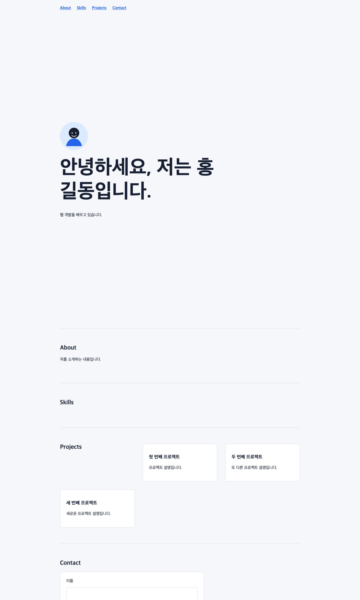
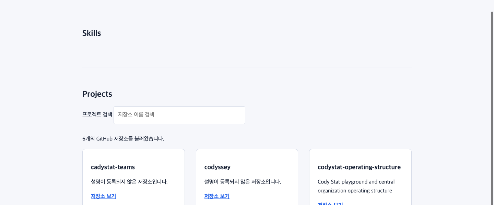

Codyssey Evidence Presentation
B1-1 자기소개 웹사이트 만들기
- 프로젝트 구조와 시맨틱 HTML 뼈대
- CSS 변수, Flexbox/Grid, 반응형 레이아웃
- DOM 선택과 이벤트 기반 인터랙션
- 다크 모드 상태와 localStorage 유지
- Contact 폼 검증과 오류/성공 렌더링
- GitHub API 비동기 호출과 상태별 Projects 렌더링
- 프로젝트 필터링
- 타이핑 효과
- 폼 실제 전송
- 시스템 다크 모드 감지
- README, GitHub 저장소, GitHub Pages 제출
프로젝트 시작 · 초기 디렉터리와 파일 구조
자기소개 웹사이트 프로젝트 생성
실습이 시작될 때 준비된 실제 work 디렉터리 구조
work/ ├── index.html ├── css/ │ └── style.css ├── js/ │ └── main.js └── images/
Chapter 1
프로젝트 구조와 시맨틱 HTML 뼈대
- 시맨틱 태그로 Hero/About/Skills/Projects/Contact/Footer 구성
- label for-id와 required/type 입력 검증
- img alt 대체 텍스트
- 프로필 이미지 표시 스타일
- Hero CTA와 Footer 링크 구조 보완
- Footer 소셜 링크 구조 보완
Chapter 1 · 시맨틱 태그로 Hero/About/Skills/Projects/Contact/Footer 구성
<!doctype html><html lang="ko"> <head> <meta charset="UTF-8"> <meta name="viewport" content="width=device-width, initial-scale=1.0"> <title>나를 소개하는 웹페이지</title> <link rel="stylesheet" href="css/style.css"> <script src="js/main.js" defer></script> </head> <body> <header> <nav aria-label="주요 메뉴"> <a href="#about">About</a> <a href="#skills">Skills</a> <a href="#projects">Projects</a> <a href="#contact">Contact</a> </nav> </header> <main> <section id="hero"> <h1>안녕하세요, 저는 홍길동입니다.</h1> <p>웹 개발을 배우고 있습니다.</p> </section> <section id="about"> <h2>About</h2> <p>저를 소개하는 내용입니다.</p> </section> <section id="skills"> <h2>Skills</h2> </section> <section id="projects"> <h2>Projects</h2> <article> <h3>첫 번째 프로젝트</h3> <p>프로젝트 설명입니다.</p> </article> </section> <section id="contact"> <h2>Contact</h2> <form> <label for="name">이름</label> <input id="name" name="name" type="text"> </form> </section> </main> <footer> <p>© 2026 홍길동</p> </footer> </body></html>Chapter 1 · label for-id와 required/type 입력 검증
<!doctype html><html lang="ko"> <head> <meta charset="UTF-8"> <meta name="viewport" content="width=device-width, initial-scale=1.0"> <title>나를 소개하는 웹페이지</title> <link rel="stylesheet" href="css/style.css"> <script src="js/main.js" defer></script> </head> <body> <header> <nav aria-label="주요 메뉴"> <a href="#about">About</a> <a href="#skills">Skills</a> <a href="#projects">Projects</a> <a href="#contact">Contact</a> </nav> </header> <main> <section id="hero"> <h1>안녕하세요, 저는 홍길동입니다.</h1> <p>웹 개발을 배우고 있습니다.</p> </section> <section id="about"> <h2>About</h2> <p>저를 소개하는 내용입니다.</p> </section> <section id="skills"> <h2>Skills</h2> </section> <section id="projects"> <h2>Projects</h2> <article> <h3>첫 번째 프로젝트</h3> <p>프로젝트 설명입니다.</p> </article> </section> <section id="contact"> <h2>Contact</h2> <form> <label for="name">이름</label> <input id="name" name="name" type="text"> <input id="name" name="name" type="text" required> <label for="email">이메일</label> <input id="email" name="email" type="email" required> <label for="message">메시지</label> <textarea id="message" name="message" rows="5" required></textarea> </form> </section> </main> <footer> <p>© 2026 홍길동</p> </footer> </body></html>Chapter 1 · img alt 대체 텍스트
<!doctype html><html lang="ko"> <head> <meta charset="UTF-8"> <meta name="viewport" content="width=device-width, initial-scale=1.0"> <title>나를 소개하는 웹페이지</title> <link rel="stylesheet" href="css/style.css"> <script src="js/main.js" defer></script> </head> <body> <header> <nav aria-label="주요 메뉴"> <a href="#about">About</a> <a href="#skills">Skills</a> <a href="#projects">Projects</a> <a href="#contact">Contact</a> </nav> </header> <main> <section id="hero"> <img src="images/profile.svg" alt="홍길동을 상징하는 초상화 일러스트"> <h1>안녕하세요, 저는 홍길동입니다.</h1> <p>웹 개발을 배우고 있습니다.</p> </section> <section id="about"> <h2>About</h2> <p>저를 소개하는 내용입니다.</p> </section> <section id="skills"> <h2>Skills</h2> </section> <section id="projects"> <h2>Projects</h2> <article> <h3>첫 번째 프로젝트</h3> <p>프로젝트 설명입니다.</p> </article> </section> <section id="contact"> <h2>Contact</h2> <form> <label for="name">이름</label> <input id="name" name="name" type="text" required> <label for="email">이메일</label> <input id="email" name="email" type="email" required> <label for="message">메시지</label> <textarea id="message" name="message" rows="5" required></textarea> </form> </section> </main> <footer> <p>© 2026 홍길동</p> </footer> </body></html>Chapter 1 · 프로필 이미지 표시 스타일
#hero img { width: 7rem; aspect-ratio: 1; margin-bottom: 1.5rem; border-radius: 50%;}Chapter 1 · Hero CTA와 Footer 링크 구조 보완
<!doctype html><html lang="ko"> <head> <meta charset="UTF-8"> <meta name="viewport" content="width=device-width, initial-scale=1.0"> <title>나를 소개하는 웹페이지</title> <link rel="stylesheet" href="css/style.css"> <script src="js/main.js" defer></script> </head> <body> <header> <nav aria-label="주요 메뉴"> <a href="#about">About</a> <a href="#skills">Skills</a> <a href="#projects">Projects</a> <a href="#contact">Contact</a> </nav> </header> <main> <section id="hero"> <img src="images/profile.svg" alt="홍길동을 상징하는 초상화 일러스트"> <h1>안녕하세요, 저는 홍길동입니다.</h1> <p id="typing-text" data-text="웹 개발을 배우고 있습니다." aria-live="polite">웹 개발을 배우고 있습니다.</p> <p>웹 개발을 배우고 있습니다.</p> <p> <a href="#projects">프로젝트 보기</a> <a href="#contact">연락하기</a> </p> </section> <section id="about"> <h2>About</h2> <p>저를 소개하는 내용입니다.</p> </section> <section id="skills"> <h2>Skills</h2> </section> <section id="projects"> <h2>Projects</h2> <p id="projects-status">GitHub 저장소를 불러오는 중입니다.</p> <div id="project-list" aria-live="polite"></div> </section> <section id="contact"> <h2>Contact</h2> <form> <label for="name">이름</label> <input id="name" name="name" type="text" required> <label for="email">이메일</label> <input id="email" name="email" type="email" required> <label for="message">메시지</label> <textarea id="message" name="message" rows="5" required></textarea> </form> </section> </main> <footer> <p>© 2026 홍길동</p> </footer> </body></html> <button id="theme-toggle" type="button">다크 모드</button> <button id="menu-toggle" type="button" aria-label="메뉴 열기" aria-expanded="false" aria-controls="main-nav"> ☰ </button> <button id="top-button" type="button" aria-label="맨 위로 이동"> ↑ </button> <button type="submit">보내기</button> <p id="form-status" role="status" aria-live="polite"></p>Chapter 1 · Hero CTA와 Footer 링크 구조 보완
<!doctype html><html lang="ko"> <head> <meta charset="UTF-8"> <meta name="viewport" content="width=device-width, initial-scale=1.0"> <title>나를 소개하는 웹페이지</title> <link rel="stylesheet" href="css/style.css"> <script src="js/main.js" defer></script> </head> <body> <header> <nav aria-label="주요 메뉴"> <a href="#about">About</a> <a href="#skills">Skills</a> <a href="#projects">Projects</a> <a href="#contact">Contact</a> </nav> </header> <main> <section id="hero"> <img src="images/profile.svg" alt="홍길동을 상징하는 초상화 일러스트"> <h1>안녕하세요, 저는 홍길동입니다.</h1> <p>웹 개발을 배우고 있습니다.</p> <p> <a href="#projects">프로젝트 보기</a> <a href="#contact">연락하기</a> </p> </section> <section id="about"> <h2>About</h2> <p>저를 소개하는 내용입니다.</p> </section> <section id="skills"> <h2>Skills</h2> </section> <section id="projects"> <h2>Projects</h2> <p id="projects-status">GitHub 저장소를 불러오는 중입니다.</p> <div id="project-list" aria-live="polite"></div> </section> <section id="contact"> <h2>Contact</h2> <form> <label for="name">이름</label> <input id="name" name="name" type="text" required> <label for="email">이메일</label> <input id="email" name="email" type="email" required> <label for="message">메시지</label> <textarea id="message" name="message" rows="5" required></textarea> </form> </section> </main> <footer> <p>© 2026 홍길동</p> <p> <a href="https://github.com/Logan-kim-the-philosopher">GitHub</a> </p> </footer> </body></html> <button id="theme-toggle" type="button">다크 모드</button> <button id="menu-toggle" type="button" aria-label="메뉴 열기" aria-expanded="false" aria-controls="main-nav"> ☰ </button> <button id="top-button" type="button" aria-label="맨 위로 이동"> ↑ </button> <button type="submit">보내기</button> <p id="form-status" role="status" aria-live="polite"></p>Chapter 1 · Footer 소셜 링크 구조 보완
<!doctype html><html lang="ko"> <head> <meta charset="UTF-8"> <meta name="viewport" content="width=device-width, initial-scale=1.0"> <title>나를 소개하는 웹페이지</title> <link rel="stylesheet" href="css/style.css"> <script src="js/main.js" defer></script> </head> <body> <header> <button id="menu-toggle" type="button" aria-label="메뉴 열기" aria-expanded="false" aria-controls="main-nav"> ☰ </button> <nav id="main-nav" aria-label="주요 메뉴"> <a href="#about">About</a> <a href="#skills">Skills</a> <a href="#projects">Projects</a> <a href="#contact">Contact</a> <button id="theme-toggle" type="button">다크 모드</button> </nav> </header> <main> <section id="hero"> <img src="images/profile.svg" alt="홍길동을 상징하는 초상화 일러스트"> <h1>안녕하세요, 저는 홍길동입니다.</h1> <p id="typing-text" data-text="웹 개발을 배우고 있습니다." aria-live="polite">웹 개발을 배우고 있습니다.</p> <p> <a href="#projects">프로젝트 보기</a> <a href="#contact">연락하기</a> </p> </section> <section id="about"> <h2>About</h2> <p>저를 소개하는 내용입니다.</p> </section> <section id="skills"> <h2>Skills</h2> </section> <section id="projects"> <h2>Projects</h2> <label for="project-filter">프로젝트 검색</label> <input id="project-filter" name="project-filter" type="search" placeholder="저장소 이름 검색"> <p id="projects-status">GitHub 저장소를 불러오는 중입니다.</p> <div id="project-list" aria-live="polite"></div> </section> <section id="contact"> <h2>Contact</h2> <form> <label for="name">이름</label> <input id="name" name="name" type="text" required> <label for="email">이메일</label> <input id="email" name="email" type="email" required> <label for="message">메시지</label> <textarea id="message" name="message" rows="5" required></textarea> <p id="form-status" role="status" aria-live="polite"></p> <button type="submit">보내기</button> </form> </section> </main> <button id="top-button" type="button" aria-label="맨 위로 이동"> ↑ </button> <footer> <p>© 2026 홍길동</p> <p> <a href="https://github.com/Logan-kim-the-philosopher">GitHub</a> <a href="https://www.linkedin.com/in/hong-gildong">LinkedIn</a> </p> </footer> </body></html>Chapter 1 Evidence
img alt 대체 텍스트와 프로필 이미지 스타일
Chapter 2
CSS 변수, Flexbox/Grid, 반응형 레이아웃
- CSS 변수와 기본 레이아웃 연결
- Grid auto-fit/minmax 카드 레이아웃
- 768px/1024px 반응형 규칙
- 다크 테마 토큰
- 프로젝트 카드 HTML 요소 추가
- 카드와 버튼의 hover 시각 피드백 보완
- 전체 너비 네비게이션 여백 제거
- 데스크톱 미디어 쿼리의 헤더 폭 제한 제거
Chapter 2 · CSS 변수와 기본 레이아웃 연결
:root { --color-bg: #f6f7fb; --color-surface: #ffffff; --color-text: #172033; --color-muted: #667085; --color-accent: #2563eb; --color-border: #d9deea; --content-width: 960px; --space-section: 5rem; font-family: "Pretendard", "Apple SD Gothic Neo", sans-serif; color: var(--color-text); background: var(--color-bg);} * { box-sizing: border-box;} html { scroll-behavior: smooth;} body { margin: 0; line-height: 1.6;} header,main,footer { width: min(100% - 2rem, var(--content-width)); margin-inline: auto;} header { padding-block: 1.25rem;} nav { display: flex; flex-wrap: wrap; gap: 1rem 1.5rem;} a { color: var(--color-accent); font-weight: 700;} section { padding-block: var(--space-section); border-bottom: 1px solid var(--color-border);} #hero { min-height: 55vh; display: grid; align-content: center;} #hero img { width: 7rem; aspect-ratio: 1; margin-bottom: 1.5rem; border-radius: 50%;} h1,h2,h3 { line-height: 1.2;} h1 { max-width: 12ch; margin-block: 0 1rem; font-size: clamp(2.5rem, 8vw, 5rem);} h2 { margin-top: 0;} article,form { padding: 1.5rem; background: var(--color-surface); border: 1px solid var(--color-border); border-radius: 8px;} form { display: grid; gap: 0.75rem; max-width: 36rem;} input,textarea { width: 100%; padding: 0.75rem; font: inherit; border: 1px solid var(--color-border); border-radius: 4px;} footer { padding-block: 2rem; color: var(--color-muted);}Chapter 2 · Grid auto-fit/minmax 카드 레이아웃
:root { --color-bg: #f6f7fb; --color-surface: #ffffff; --color-text: #172033; --color-muted: #667085; --color-accent: #2563eb; --color-border: #d9deea; --content-width: 960px; --space-section: 5rem; font-family: "Pretendard", "Apple SD Gothic Neo", sans-serif; color: var(--color-text); background: var(--color-bg);} * { box-sizing: border-box;} html { scroll-behavior: smooth;} body { margin: 0; line-height: 1.6;} header,main,footer { width: min(100% - 2rem, var(--content-width)); margin-inline: auto;} header { padding-block: 1.25rem;} nav { display: flex; flex-wrap: wrap; gap: 1rem 1.5rem;} a { color: var(--color-accent); font-weight: 700;} section { padding-block: var(--space-section); border-bottom: 1px solid var(--color-border);} #projects { display: grid; grid-template-columns: repeat(auto-fit, minmax(240px, 1fr)); gap: 1.5rem;} #hero { min-height: 55vh; display: grid; align-content: center;} #hero img { width: 7rem; aspect-ratio: 1; margin-bottom: 1.5rem; border-radius: 50%;} h1,h2,h3 { line-height: 1.2;} h1 { max-width: 12ch; margin-block: 0 1rem; font-size: clamp(2.5rem, 8vw, 5rem);} h2 { margin-top: 0;} article,form { padding: 1.5rem; background: var(--color-surface); border: 1px solid var(--color-border); border-radius: 8px;} form { display: grid; gap: 0.75rem; max-width: 36rem;} input,textarea { width: 100%; padding: 0.75rem; font: inherit; border: 1px solid var(--color-border); border-radius: 4px;} footer { padding-block: 2rem; color: var(--color-muted);}Chapter 2 · 768px/1024px 반응형 규칙
:root { --color-bg: #f6f7fb; --color-surface: #ffffff; --color-text: #172033; --color-muted: #667085; --color-accent: #2563eb; --color-border: #d9deea; --content-width: 960px; --space-section: 5rem; font-family: "Pretendard", "Apple SD Gothic Neo", sans-serif; color: var(--color-text); background: var(--color-bg);} * { box-sizing: border-box;} html { scroll-behavior: smooth;} body { margin: 0; line-height: 1.6;} header,main,footer { width: min(100% - 2rem, var(--content-width)); margin-inline: auto;} header { padding-block: 1.25rem;} nav { display: flex; flex-wrap: wrap; gap: 1rem 1.5rem;} a { color: var(--color-accent); font-weight: 700;} section { padding-block: var(--space-section); border-bottom: 1px solid var(--color-border);} #projects { display: grid; grid-template-columns: repeat(auto-fit, minmax(240px, 1fr)); gap: 1.5rem;} #hero { min-height: 55vh; display: grid; align-content: center;} #hero img { width: 7rem; aspect-ratio: 1; margin-bottom: 1.5rem; border-radius: 50%;} h1,h2,h3 { line-height: 1.2;} h1 { max-width: 12ch; margin-block: 0 1rem; font-size: clamp(2.5rem, 8vw, 5rem);} h2 { margin-top: 0;} article,form { padding: 1.5rem; background: var(--color-surface); border: 1px solid var(--color-border); border-radius: 8px;} form { display: grid; gap: 0.75rem; max-width: 36rem;} input,textarea { width: 100%; padding: 0.75rem; font: inherit; border: 1px solid var(--color-border); border-radius: 4px;} footer { padding-block: 2rem; color: var(--color-muted);} @media (min-width: 768px) { header, main, footer { width: min(100% - 4rem, var(--content-width)); } #hero { min-height: 65vh; } #projects { gap: 2rem; }} @media (min-width: 1024px) { section { padding-block: 7rem; } #hero h1 { font-size: 5rem; }}Chapter 2 · 다크 테마 토큰
:root { --color-bg: #f6f7fb; --color-surface: #ffffff; --color-text: #172033; --color-muted: #667085; --color-accent: #2563eb; --color-border: #d9deea; --content-width: 960px; --space-section: 5rem; font-family: "Pretendard", "Apple SD Gothic Neo", sans-serif; color: var(--color-text); background: var(--color-bg);} [data-theme="dark"] { --color-bg: #172033; --color-surface: #24324a; --color-text: #f8fafc; --color-muted: #cbd5e1; --color-border: #475569;} * { box-sizing: border-box;} html { scroll-behavior: smooth;} body { margin: 0; line-height: 1.6;} header,main,footer { width: min(100% - 2rem, var(--content-width)); margin-inline: auto;} header { padding-block: 1.25rem;} nav { display: flex; flex-wrap: wrap; gap: 1rem 1.5rem;} a { color: var(--color-accent); font-weight: 700;} section { padding-block: var(--space-section); border-bottom: 1px solid var(--color-border);} #projects { display: grid; grid-template-columns: repeat(auto-fit, minmax(240px, 1fr)); gap: 1.5rem;} #hero { min-height: 55vh; display: grid; align-content: center;} #hero img { width: 7rem; aspect-ratio: 1; margin-bottom: 1.5rem; border-radius: 50%;} h1,h2,h3 { line-height: 1.2;} h1 { max-width: 12ch; margin-block: 0 1rem; font-size: clamp(2.5rem, 8vw, 5rem);} h2 { margin-top: 0;} article,form { padding: 1.5rem; background: var(--color-surface); border: 1px solid var(--color-border); border-radius: 8px;} form { display: grid; gap: 0.75rem; max-width: 36rem;} input,textarea { width: 100%; padding: 0.75rem; font: inherit; border: 1px solid var(--color-border); border-radius: 4px;} footer { padding-block: 2rem; color: var(--color-muted);} @media (min-width: 768px) { header, main, footer { width: min(100% - 4rem, var(--content-width)); } #hero { min-height: 65vh; } #projects { gap: 2rem; }} @media (min-width: 1024px) { section { padding-block: 7rem; } #hero h1 { font-size: 5rem; }}Chapter 2 · 프로젝트 카드 HTML 요소 추가
<!doctype html><html lang="ko"> <head> <meta charset="UTF-8"> <meta name="viewport" content="width=device-width, initial-scale=1.0"> <title>나를 소개하는 웹페이지</title> <link rel="stylesheet" href="css/style.css"> <script src="js/main.js" defer></script> </head> <body> <header> <nav aria-label="주요 메뉴"> <a href="#about">About</a> <a href="#skills">Skills</a> <a href="#projects">Projects</a> <a href="#contact">Contact</a> </nav> </header> <main> <section id="hero"> <img src="images/profile.svg" alt="홍길동을 상징하는 초상화 일러스트"> <h1>안녕하세요, 저는 홍길동입니다.</h1> <p>웹 개발을 배우고 있습니다.</p> </section> <section id="about"> <h2>About</h2> <p>저를 소개하는 내용입니다.</p> </section> <section id="skills"> <h2>Skills</h2> </section> <section id="projects"> <h2>Projects</h2> <article> <h3>첫 번째 프로젝트</h3> <p>프로젝트 설명입니다.</p> </article> <article> <h3>두 번째 프로젝트</h3> <p>또 다른 프로젝트 설명입니다.</p> </article> <article> <h3>세 번째 프로젝트</h3> <p>새로운 프로젝트 설명입니다.</p> </article> </section> <section id="contact"> <h2>Contact</h2> <form> <label for="name">이름</label> <input id="name" name="name" type="text" required> <label for="email">이메일</label> <input id="email" name="email" type="email" required> <label for="message">메시지</label> <textarea id="message" name="message" rows="5" required></textarea> </form> </section> </main> <footer> <p>© 2026 홍길동</p> </footer> </body></html>Chapter 2 · 카드와 버튼의 hover 시각 피드백 보완
:root { --color-bg: #f6f7fb; --color-surface: #ffffff; --color-text: #172033; --color-muted: #667085; --color-accent: #2563eb; --color-border: #d9deea; --content-width: 960px; --space-section: 5rem; font-family: "Pretendard", "Apple SD Gothic Neo", sans-serif; color: var(--color-text); background: var(--color-bg);} [data-theme="dark"] { --color-bg: #172033; --color-surface: #24324a; --color-text: #f8fafc; --color-muted: #cbd5e1; --color-border: #475569;} * { box-sizing: border-box;} html { scroll-behavior: smooth;} body { margin: 0; line-height: 1.6;} header,main,footer { width: min(100% - 2rem, var(--content-width)); margin-inline: auto;} header { padding-block: 1.25rem;} nav { display: flex; flex-wrap: wrap; gap: 1rem 1.5rem;} a { color: var(--color-accent); font-weight: 700;} section { padding-block: var(--space-section); border-bottom: 1px solid var(--color-border);} #project-list { display: grid; grid-template-columns: repeat(auto-fit, minmax(240px, 1fr)); gap: 1.5rem;} #project-filter { max-width: 24rem; margin-bottom: 1rem;} #hero { min-height: 55vh; display: grid; align-content: center;} #hero img { width: 7rem; aspect-ratio: 1; margin-bottom: 1.5rem; border-radius: 50%;} h1,h2,h3 { line-height: 1.2;} h1 { max-width: 12ch; margin-block: 0 1rem; font-size: clamp(2.5rem, 8vw, 5rem);} h2 { margin-top: 0;} article,form { padding: 1.5rem; background: var(--color-surface); border: 1px solid var(--color-border); border-radius: 8px; box-shadow: 0 8px 24px rgba(23, 32, 51, 0.08);} article,button { transition: transform 0.2s ease, box-shadow 0.2s ease;} article:hover,button:hover { transform: translateY(-2px); box-shadow: 0 10px 24px rgba(23, 32, 51, 0.14);} form { display: grid; gap: 0.75rem; max-width: 36rem;} input,textarea { width: 100%; padding: 0.75rem; font: inherit; border: 1px solid var(--color-border); border-radius: 4px;} footer { padding-block: 2rem; color: var(--color-muted);} @media (min-width: 768px) { header, main, footer { width: min(100% - 4rem, var(--content-width)); } #hero { min-height: 65vh; } #project-list { gap: 2rem; }} @media (min-width: 1024px) { section { padding-block: 7rem; } #hero h1 { font-size: 5rem; }} #menu-toggle { margin-bottom: 1rem;} @media (max-width: 767px) { nav { display: none; } nav.active { display: flex; }} @media (min-width: 768px) { #menu-toggle { display: none; }} #top-button { position: fixed; right: 1rem; bottom: 1rem; display: none;} body.passed-hero #top-button { display: block;} main section { opacity: 0; transform: translateY(1rem); transition: opacity 0.4s ease, transform 0.4s ease;} main section.visible { opacity: 1; transform: translateY(0);}Chapter 2 · 전체 너비 네비게이션 여백 제거
:root { --color-bg: #f6f7fb; --color-surface: #ffffff; --color-text: #172033; --color-muted: #667085; --color-accent: #2563eb; --color-border: #d9deea; --content-width: 960px; --space-section: 5rem; font-family: "Pretendard", "Apple SD Gothic Neo", sans-serif; color: var(--color-text); background: var(--color-bg);} [data-theme="dark"] { --color-bg: #172033; --color-surface: #24324a; --color-text: #f8fafc; --color-muted: #cbd5e1; --color-border: #475569;} * { box-sizing: border-box;} html { scroll-behavior: smooth;} body { margin: 0; line-height: 1.6;} header,main,footer { width: min(100% - 2rem, var(--content-width)); margin-inline: auto;} header { width: 100%; margin-inline: 0; padding-inline: 1rem; position: sticky; top: 0; z-index: 10; padding-block: 1.25rem; background: var(--color-bg); transition: background-color 0.2s ease, box-shadow 0.2s ease;} header.scrolled { box-shadow: 0 0.5rem 1.5rem rgba(23, 32, 51, 0.12);} nav { display: flex; flex-wrap: wrap; gap: 1rem 1.5rem;} #menu-toggle { margin-bottom: 1rem;} #top-button { position: fixed; right: 1rem; bottom: 1rem; display: none;} body.passed-hero #top-button { display: block;} @media (max-width: 767px) { nav { display: none; } nav.active { display: flex; }} @media (min-width: 768px) { #menu-toggle { display: none; }} a { color: var(--color-accent); font-weight: 700;} section { padding-block: var(--space-section); border-bottom: 1px solid var(--color-border);} main section { opacity: 0; transform: translateY(1rem); transition: opacity 0.4s ease, transform 0.4s ease;} main section.visible { opacity: 1; transform: translateY(0);} #project-list { display: grid; grid-template-columns: repeat(auto-fit, minmax(240px, 1fr)); gap: 1.5rem;} #project-filter { max-width: 24rem; margin-bottom: 1rem;} #hero { min-height: 55vh; display: grid; align-content: center;} #hero img { width: 7rem; aspect-ratio: 1; margin-bottom: 1.5rem; border-radius: 50%;} h1,h2,h3 { line-height: 1.2;} h1 { max-width: 12ch; margin-block: 0 1rem; font-size: clamp(2.5rem, 8vw, 5rem);} h2 { margin-top: 0;} article,form { padding: 1.5rem; background: var(--color-surface); border: 1px solid var(--color-border); border-radius: 8px; box-shadow: 0 8px 24px rgba(23, 32, 51, 0.08);} article,button { transition: transform 0.2s ease, box-shadow 0.2s ease;} article:hover,button:hover { transform: translateY(-2px); box-shadow: 0 10px 24px rgba(23, 32, 51, 0.14);} form { display: grid; gap: 0.75rem; max-width: 36rem;} input,textarea { width: 100%; padding: 0.75rem; font: inherit; border: 1px solid var(--color-border); border-radius: 4px;} footer { padding-block: 2rem; color: var(--color-muted);} @media (min-width: 768px) { header, main, footer { width: min(100% - 4rem, var(--content-width)); } #hero { min-height: 52vh; } #project-list { gap: 2rem; }} @media (min-width: 1024px) { section { padding-block: 4rem; } #hero h1 { font-size: 5rem; }}Chapter 2 · 데스크톱 미디어 쿼리의 헤더 폭 제한 제거
:root { --color-bg: #f6f7fb; --color-surface: #ffffff; --color-text: #172033; --color-muted: #667085; --color-accent: #2563eb; --color-border: #d9deea; --content-width: 960px; --space-section: 5rem; font-family: "Pretendard", "Apple SD Gothic Neo", sans-serif; color: var(--color-text); background: var(--color-bg);} [data-theme="dark"] { --color-bg: #172033; --color-surface: #24324a; --color-text: #f8fafc; --color-muted: #cbd5e1; --color-border: #475569;} * { box-sizing: border-box;} html { scroll-behavior: smooth;} body { margin: 0; line-height: 1.6;} main,footer { width: min(100% - 2rem, var(--content-width)); margin-inline: auto;} header { width: 100%; margin-inline: 0; padding-inline: 1rem; position: sticky; top: 0; z-index: 10; padding-block: 1.25rem; background: var(--color-bg); transition: background-color 0.2s ease, box-shadow 0.2s ease;} header.scrolled { box-shadow: 0 0.5rem 1.5rem rgba(23, 32, 51, 0.12);} nav { display: flex; flex-wrap: wrap; gap: 1rem 1.5rem;} #menu-toggle { margin-bottom: 1rem;} #top-button { position: fixed; right: 1rem; bottom: 1rem; display: none;} body.passed-hero #top-button { display: block;} @media (max-width: 767px) { nav { display: none; } nav.active { display: flex; }} @media (min-width: 768px) { #menu-toggle { display: none; }} a { color: var(--color-accent); font-weight: 700;} section { padding-block: var(--space-section); border-bottom: 1px solid var(--color-border);} main section { opacity: 0; transform: translateY(1rem); transition: opacity 0.4s ease, transform 0.4s ease;} main section.visible { opacity: 1; transform: translateY(0);} #project-list { display: grid; grid-template-columns: repeat(auto-fit, minmax(240px, 1fr)); gap: 1.5rem;} #project-filter { max-width: 24rem; margin-bottom: 1rem;} #hero { min-height: 55vh; display: grid; align-content: center;} #hero img { width: 7rem; aspect-ratio: 1; margin-bottom: 1.5rem; border-radius: 50%;} h1,h2,h3 { line-height: 1.2;} h1 { max-width: 12ch; margin-block: 0 1rem; font-size: clamp(2.5rem, 8vw, 5rem);} h2 { margin-top: 0;} article,form { padding: 1.5rem; background: var(--color-surface); border: 1px solid var(--color-border); border-radius: 8px; box-shadow: 0 8px 24px rgba(23, 32, 51, 0.08);} article,button { transition: transform 0.2s ease, box-shadow 0.2s ease;} article:hover,button:hover { transform: translateY(-2px); box-shadow: 0 10px 24px rgba(23, 32, 51, 0.14);} form { display: grid; gap: 0.75rem; max-width: 36rem;} input,textarea { width: 100%; padding: 0.75rem; font: inherit; border: 1px solid var(--color-border); border-radius: 4px;} footer { padding-block: 2rem; color: var(--color-muted);} @media (min-width: 768px) { header, main, footer { width: min(100% - 4rem, var(--content-width)); } #hero { min-height: 52vh; } #project-list { gap: 2rem; }} @media (min-width: 1024px) { section { padding-block: 4rem; } #hero h1 { font-size: 5rem; }}Chapter 2 Evidence
챕터 완료 브라우저 렌더링 확인

Chapter 3
DOM 선택과 이벤트 기반 인터랙션
- querySelector 선택과 DOM 참조 만들기
- classList.toggle active 메뉴 상태 전환
- scroll 이벤트와 60px/300px 스크롤 기준 확인
- scroll 이벤트와 60px/300px 스크롤 기준 상태 전환
- IntersectionObserver threshold 0.2 섹션 등장 효과
- 햄버거 버튼과 nav active 메뉴 상태 전환
- 스크롤 탑 버튼 HTML 구조 추가
- 스크롤 탑 버튼 표시와 최상단 이동
- IntersectionObserver visible 클래스와 섹션 등장 애니메이션
- 메뉴 링크의 preventDefault와 부드러운 섹션 이동
- 스크롤 시 sticky 헤더 고정과 상태 스타일 연결
Chapter 3 · querySelector 선택과 DOM 참조 만들기
const navigation = document.querySelector("nav");const navigationLinks = document.querySelectorAll("nav a");const projectsSection = document.querySelector("#projects"); console.log(navigation);console.log(navigationLinks.length);console.log(projectsSection);Chapter 3 · querySelector 선택과 DOM 참조 만들기
const navigation = document.querySelector("nav");const navigationLinks = document.querySelectorAll("nav a");const projectsSection = document.querySelector("#projects"); console.log(navigation);console.log(navigationLinks.length);console.log(projectsSection); navigationLinks.forEach((link) => { link.addEventListener("click", (event) => { console.log(`${link.textContent} 메뉴를 클릭했습니다.`); });});Chapter 3 · querySelector 선택과 DOM 참조 만들기
$ "/Applications/Google Chrome.app/Contents/MacOS/Google Chrome" --headless=new --dump-dom /tmp/b1-1-console-click-check.html
NAV 4 SECTION projects About 메뉴를 클릭했습니다.
Chapter 3 · classList.toggle active 메뉴 상태 전환
const navigation = document.querySelector("nav");const navigationLinks = document.querySelectorAll("nav a");const projectsSection = document.querySelector("#projects"); console.log(navigation);console.log(navigationLinks.length);console.log(projectsSection); navigationLinks.forEach((link) => { link.addEventListener("click", (event) => { console.log(`${link.textContent} 메뉴를 클릭했습니다.`); event.preventDefault(); link.classList.toggle("active"); console.log(`${link.textContent} 메뉴 active 상태: ${link.classList.contains("active")}`); });});Chapter 3 · classList.toggle active 메뉴 상태 전환
$ chrome --headless=new --dump-dom /tmp/b1-1-toggle-check.html
NAV 4 SECTION projects About 메뉴 active 상태: true About 메뉴 active 상태: false
Chapter 3 · scroll 이벤트와 60px/300px 스크롤 기준 확인
const navigation = document.querySelector("nav");const navigationLinks = document.querySelectorAll("nav a");const projectsSection = document.querySelector("#projects"); console.log(navigation);console.log(navigationLinks.length);console.log(projectsSection); navigationLinks.forEach((link) => { link.addEventListener("click", (event) => { event.preventDefault(); link.classList.toggle("active"); console.log(`${link.textContent} 메뉴 active 상태: ${link.classList.contains("active")}`); });}); window.addEventListener("scroll", () => { console.log(`현재 스크롤 위치: ${window.scrollY}px`);});Chapter 3 · scroll 이벤트와 60px/300px 스크롤 기준 상태 전환
const navigation = document.querySelector("nav");const navigationLinks = document.querySelectorAll("nav a");const projectsSection = document.querySelector("#projects"); console.log(navigation);console.log(navigationLinks.length);console.log(projectsSection); navigationLinks.forEach((link) => { link.addEventListener("click", (event) => { event.preventDefault(); link.classList.toggle("active"); console.log(`${link.textContent} 메뉴 active 상태: ${link.classList.contains("active")}`); });}); window.addEventListener("scroll", () => { console.log(`현재 스크롤 위치: ${window.scrollY}px`);});const isScrolled = window.scrollY >= 60;const passedHero = window.scrollY >= 300; navigation.classList.toggle("scrolled", isScrolled);document.body.classList.toggle("passed-hero", passedHero); console.log(`scrolled: ${isScrolled}, passedHero: ${passedHero}`);Chapter 3 · IntersectionObserver threshold 0.2 섹션 등장 효과
const navigation = document.querySelector("nav");const navigationLinks = document.querySelectorAll("nav a");const projectsSection = document.querySelector("#projects"); console.log(navigation);console.log(navigationLinks.length);console.log(projectsSection); navigationLinks.forEach((link) => { link.addEventListener("click", (event) => { event.preventDefault(); link.classList.toggle("active"); console.log(`${link.textContent} 메뉴 active 상태: ${link.classList.contains("active")}`); });}); window.addEventListener("scroll", () => { console.log(`현재 스크롤 위치: ${window.scrollY}px`);});const isScrolled = window.scrollY >= 60;const passedHero = window.scrollY >= 300; navigation.classList.toggle("scrolled", isScrolled);document.body.classList.toggle("passed-hero", passedHero); console.log(`scrolled: ${isScrolled}, passedHero: ${passedHero}`);const sections = document.querySelectorAll("main section"); const observer = new IntersectionObserver( (entries) => { entries.forEach((entry) => { if (entry.isIntersecting) { entry.target.classList.add("visible"); observer.unobserve(entry.target); } }); }, { threshold: 0.2 },); sections.forEach((section) => { observer.observe(section);});Chapter 3 · 햄버거 버튼과 nav active 메뉴 상태 전환
<!doctype html><html lang="ko"> <head> <meta charset="UTF-8"> <meta name="viewport" content="width=device-width, initial-scale=1.0"> <title>나를 소개하는 웹페이지</title> <link rel="stylesheet" href="css/style.css"> <script src="js/main.js" defer></script> </head> <body> <header> <nav aria-label="주요 메뉴"> <a href="#about">About</a> <a href="#skills">Skills</a> <a href="#projects">Projects</a> <a href="#contact">Contact</a> </nav> </header> <main> <section id="hero"> <img src="images/profile.svg" alt="홍길동을 상징하는 초상화 일러스트"> <h1>안녕하세요, 저는 홍길동입니다.</h1> <p>웹 개발을 배우고 있습니다.</p> </section> <section id="about"> <h2>About</h2> <p>저를 소개하는 내용입니다.</p> </section> <section id="skills"> <h2>Skills</h2> </section> <section id="projects"> <h2>Projects</h2> <article> <h3>첫 번째 프로젝트</h3> <p>프로젝트 설명입니다.</p> </article> <article> <h3>두 번째 프로젝트</h3> <p>또 다른 프로젝트 설명입니다.</p> </article> <article> <h3>세 번째 프로젝트</h3> <p>새로운 프로젝트 설명입니다.</p> </article> </section> <section id="contact"> <h2>Contact</h2> <form> <label for="name">이름</label> <input id="name" name="name" type="text" required> <label for="email">이메일</label> <input id="email" name="email" type="email" required> <label for="message">메시지</label> <textarea id="message" name="message" rows="5" required></textarea> </form> </section> </main> <footer> <p>© 2026 홍길동</p> </footer> </body></html> <button id="theme-toggle" type="button">다크 모드</button> <button id="menu-toggle" type="button" aria-label="메뉴 열기" aria-expanded="false" aria-controls="main-nav"> ☰ </button>Chapter 3 · 햄버거 버튼과 nav active 메뉴 상태 전환
:root { --color-bg: #f6f7fb; --color-surface: #ffffff; --color-text: #172033; --color-muted: #667085; --color-accent: #2563eb; --color-border: #d9deea; --content-width: 960px; --space-section: 5rem; font-family: "Pretendard", "Apple SD Gothic Neo", sans-serif; color: var(--color-text); background: var(--color-bg);} [data-theme="dark"] { --color-bg: #172033; --color-surface: #24324a; --color-text: #f8fafc; --color-muted: #cbd5e1; --color-border: #475569;} * { box-sizing: border-box;} html { scroll-behavior: smooth;} body { margin: 0; line-height: 1.6;} header,main,footer { width: min(100% - 2rem, var(--content-width)); margin-inline: auto;} header { padding-block: 1.25rem;} nav { display: flex; flex-wrap: wrap; gap: 1rem 1.5rem;} a { color: var(--color-accent); font-weight: 700;} section { padding-block: var(--space-section); border-bottom: 1px solid var(--color-border);} #projects { display: grid; grid-template-columns: repeat(auto-fit, minmax(240px, 1fr)); gap: 1.5rem;} #hero { min-height: 55vh; display: grid; align-content: center;} #hero img { width: 7rem; aspect-ratio: 1; margin-bottom: 1.5rem; border-radius: 50%;} h1,h2,h3 { line-height: 1.2;} h1 { max-width: 12ch; margin-block: 0 1rem; font-size: clamp(2.5rem, 8vw, 5rem);} h2 { margin-top: 0;} article,form { padding: 1.5rem; background: var(--color-surface); border: 1px solid var(--color-border); border-radius: 8px;} form { display: grid; gap: 0.75rem; max-width: 36rem;} input,textarea { width: 100%; padding: 0.75rem; font: inherit; border: 1px solid var(--color-border); border-radius: 4px;} footer { padding-block: 2rem; color: var(--color-muted);} @media (min-width: 768px) { header, main, footer { width: min(100% - 4rem, var(--content-width)); } #hero { min-height: 65vh; } #projects { gap: 2rem; }} @media (min-width: 1024px) { section { padding-block: 7rem; } #hero h1 { font-size: 5rem; }} #menu-toggle { margin-bottom: 1rem;} @media (max-width: 767px) { nav { display: none; } nav.active { display: flex; }} @media (min-width: 768px) { #menu-toggle { display: none; }}Chapter 3 · 햄버거 버튼과 nav active 메뉴 상태 전환
const navigation = document.querySelector("nav");const navigationLinks = document.querySelectorAll("nav a");const projectsSection = document.querySelector("#projects"); console.log(navigation);console.log(navigationLinks.length);console.log(projectsSection); navigationLinks.forEach((link) => { link.addEventListener("click", (event) => { event.preventDefault(); link.classList.toggle("active"); console.log(`${link.textContent} 메뉴 active 상태: ${link.classList.contains("active")}`); });}); window.addEventListener("scroll", () => { console.log(`현재 스크롤 위치: ${window.scrollY}px`);});const isScrolled = window.scrollY >= 60;const passedHero = window.scrollY >= 300; navigation.classList.toggle("scrolled", isScrolled);document.body.classList.toggle("passed-hero", passedHero); console.log(`scrolled: ${isScrolled}, passedHero: ${passedHero}`);const sections = document.querySelectorAll("main section"); const observer = new IntersectionObserver( (entries) => { entries.forEach((entry) => { if (entry.isIntersecting) { entry.target.classList.add("visible"); observer.unobserve(entry.target); } }); }, { threshold: 0.2 },); sections.forEach((section) => { observer.observe(section);}); const themeToggle = document.querySelector("#theme-toggle"); themeToggle.addEventListener("click", () => { const isDark = document.documentElement.dataset.theme === "dark"; document.documentElement.dataset.theme = isDark ? "light" : "dark";}); const savedTheme = localStorage.getItem("theme") || "light";document.documentElement.dataset.theme = savedTheme; const menuToggle = document.querySelector("#menu-toggle"); menuToggle.addEventListener("click", () => { const isOpen = navigation.classList.toggle("active"); menuToggle.setAttribute("aria-expanded", String(isOpen));});Chapter 3 · 스크롤 탑 버튼 HTML 구조 추가
<!doctype html><html lang="ko"> <head> <meta charset="UTF-8"> <meta name="viewport" content="width=device-width, initial-scale=1.0"> <title>나를 소개하는 웹페이지</title> <link rel="stylesheet" href="css/style.css"> <script src="js/main.js" defer></script> </head> <body> <header> <nav aria-label="주요 메뉴"> <a href="#about">About</a> <a href="#skills">Skills</a> <a href="#projects">Projects</a> <a href="#contact">Contact</a> </nav> </header> <main> <section id="hero"> <img src="images/profile.svg" alt="홍길동을 상징하는 초상화 일러스트"> <h1>안녕하세요, 저는 홍길동입니다.</h1> <p>웹 개발을 배우고 있습니다.</p> </section> <section id="about"> <h2>About</h2> <p>저를 소개하는 내용입니다.</p> </section> <section id="skills"> <h2>Skills</h2> </section> <section id="projects"> <h2>Projects</h2> <article> <h3>첫 번째 프로젝트</h3> <p>프로젝트 설명입니다.</p> </article> <article> <h3>두 번째 프로젝트</h3> <p>또 다른 프로젝트 설명입니다.</p> </article> <article> <h3>세 번째 프로젝트</h3> <p>새로운 프로젝트 설명입니다.</p> </article> </section> <section id="contact"> <h2>Contact</h2> <form> <label for="name">이름</label> <input id="name" name="name" type="text" required> <label for="email">이메일</label> <input id="email" name="email" type="email" required> <label for="message">메시지</label> <textarea id="message" name="message" rows="5" required></textarea> </form> </section> </main> <footer> <p>© 2026 홍길동</p> </footer> </body></html> <button id="theme-toggle" type="button">다크 모드</button> <button id="menu-toggle" type="button" aria-label="메뉴 열기" aria-expanded="false" aria-controls="main-nav"> ☰ </button> <button id="top-button" type="button" aria-label="맨 위로 이동"> ↑ </button> Chapter 3 · 스크롤 탑 버튼 표시와 최상단 이동
:root { --color-bg: #f6f7fb; --color-surface: #ffffff; --color-text: #172033; --color-muted: #667085; --color-accent: #2563eb; --color-border: #d9deea; --content-width: 960px; --space-section: 5rem; font-family: "Pretendard", "Apple SD Gothic Neo", sans-serif; color: var(--color-text); background: var(--color-bg);} [data-theme="dark"] { --color-bg: #172033; --color-surface: #24324a; --color-text: #f8fafc; --color-muted: #cbd5e1; --color-border: #475569;} * { box-sizing: border-box;} html { scroll-behavior: smooth;} body { margin: 0; line-height: 1.6;} header,main,footer { width: min(100% - 2rem, var(--content-width)); margin-inline: auto;} header { padding-block: 1.25rem;} nav { display: flex; flex-wrap: wrap; gap: 1rem 1.5rem;} a { color: var(--color-accent); font-weight: 700;} section { padding-block: var(--space-section); border-bottom: 1px solid var(--color-border);} #projects { display: grid; grid-template-columns: repeat(auto-fit, minmax(240px, 1fr)); gap: 1.5rem;} #hero { min-height: 55vh; display: grid; align-content: center;} #hero img { width: 7rem; aspect-ratio: 1; margin-bottom: 1.5rem; border-radius: 50%;} h1,h2,h3 { line-height: 1.2;} h1 { max-width: 12ch; margin-block: 0 1rem; font-size: clamp(2.5rem, 8vw, 5rem);} h2 { margin-top: 0;} article,form { padding: 1.5rem; background: var(--color-surface); border: 1px solid var(--color-border); border-radius: 8px;} form { display: grid; gap: 0.75rem; max-width: 36rem;} input,textarea { width: 100%; padding: 0.75rem; font: inherit; border: 1px solid var(--color-border); border-radius: 4px;} footer { padding-block: 2rem; color: var(--color-muted);} @media (min-width: 768px) { header, main, footer { width: min(100% - 4rem, var(--content-width)); } #hero { min-height: 65vh; } #projects { gap: 2rem; }} @media (min-width: 1024px) { section { padding-block: 7rem; } #hero h1 { font-size: 5rem; }} #menu-toggle { margin-bottom: 1rem;} @media (max-width: 767px) { nav { display: none; } nav.active { display: flex; }} @media (min-width: 768px) { #menu-toggle { display: none; }} #top-button { position: fixed; right: 1rem; bottom: 1rem; display: none;} body.passed-hero #top-button { display: block;}Chapter 3 · 스크롤 탑 버튼 표시와 최상단 이동
const navigation = document.querySelector("nav");const navigationLinks = document.querySelectorAll("nav a");const projectsSection = document.querySelector("#projects"); console.log(navigation);console.log(navigationLinks.length);console.log(projectsSection); navigationLinks.forEach((link) => { link.addEventListener("click", (event) => { event.preventDefault(); link.classList.toggle("active"); console.log(`${link.textContent} 메뉴 active 상태: ${link.classList.contains("active")}`); });}); window.addEventListener("scroll", () => { console.log(`현재 스크롤 위치: ${window.scrollY}px`);});const isScrolled = window.scrollY >= 60;const passedHero = window.scrollY >= 300; navigation.classList.toggle("scrolled", isScrolled);document.body.classList.toggle("passed-hero", passedHero); console.log(`scrolled: ${isScrolled}, passedHero: ${passedHero}`);const sections = document.querySelectorAll("main section"); const observer = new IntersectionObserver( (entries) => { entries.forEach((entry) => { if (entry.isIntersecting) { entry.target.classList.add("visible"); observer.unobserve(entry.target); } }); }, { threshold: 0.2 },); sections.forEach((section) => { observer.observe(section);}); const themeToggle = document.querySelector("#theme-toggle"); themeToggle.addEventListener("click", () => { const isDark = document.documentElement.dataset.theme === "dark"; document.documentElement.dataset.theme = isDark ? "light" : "dark";}); const savedTheme = localStorage.getItem("theme") || "light";document.documentElement.dataset.theme = savedTheme; const menuToggle = document.querySelector("#menu-toggle"); menuToggle.addEventListener("click", () => { const isOpen = navigation.classList.toggle("active"); menuToggle.setAttribute("aria-expanded", String(isOpen));}); topButton.addEventListener("click", () => { window.scrollTo({ top: 0, behavior: "smooth" });});Chapter 3 · IntersectionObserver visible 클래스와 섹션 등장 애니메이션
:root { --color-bg: #f6f7fb; --color-surface: #ffffff; --color-text: #172033; --color-muted: #667085; --color-accent: #2563eb; --color-border: #d9deea; --content-width: 960px; --space-section: 5rem; font-family: "Pretendard", "Apple SD Gothic Neo", sans-serif; color: var(--color-text); background: var(--color-bg);} [data-theme="dark"] { --color-bg: #172033; --color-surface: #24324a; --color-text: #f8fafc; --color-muted: #cbd5e1; --color-border: #475569;} * { box-sizing: border-box;} html { scroll-behavior: smooth;} body { margin: 0; line-height: 1.6;} header,main,footer { width: min(100% - 2rem, var(--content-width)); margin-inline: auto;} header { padding-block: 1.25rem;} nav { display: flex; flex-wrap: wrap; gap: 1rem 1.5rem;} a { color: var(--color-accent); font-weight: 700;} section { padding-block: var(--space-section); border-bottom: 1px solid var(--color-border);} #projects { display: grid; grid-template-columns: repeat(auto-fit, minmax(240px, 1fr)); gap: 1.5rem;} #hero { min-height: 55vh; display: grid; align-content: center;} #hero img { width: 7rem; aspect-ratio: 1; margin-bottom: 1.5rem; border-radius: 50%;} h1,h2,h3 { line-height: 1.2;} h1 { max-width: 12ch; margin-block: 0 1rem; font-size: clamp(2.5rem, 8vw, 5rem);} h2 { margin-top: 0;} article,form { padding: 1.5rem; background: var(--color-surface); border: 1px solid var(--color-border); border-radius: 8px;} form { display: grid; gap: 0.75rem; max-width: 36rem;} input,textarea { width: 100%; padding: 0.75rem; font: inherit; border: 1px solid var(--color-border); border-radius: 4px;} footer { padding-block: 2rem; color: var(--color-muted);} @media (min-width: 768px) { header, main, footer { width: min(100% - 4rem, var(--content-width)); } #hero { min-height: 65vh; } #projects { gap: 2rem; }} @media (min-width: 1024px) { section { padding-block: 7rem; } #hero h1 { font-size: 5rem; }} #menu-toggle { margin-bottom: 1rem;} @media (max-width: 767px) { nav { display: none; } nav.active { display: flex; }} @media (min-width: 768px) { #menu-toggle { display: none; }} #top-button { position: fixed; right: 1rem; bottom: 1rem; display: none;} body.passed-hero #top-button { display: block;} main section { opacity: 0; transform: translateY(1rem); transition: opacity 0.4s ease, transform 0.4s ease;} main section.visible { opacity: 1; transform: translateY(0);}Chapter 3 · 메뉴 링크의 preventDefault와 부드러운 섹션 이동
const navigation = document.querySelector("nav");const navigationLinks = document.querySelectorAll("nav a");const projectsSection = document.querySelector("#projects"); console.log(navigation);console.log(navigationLinks.length);console.log(projectsSection); navigationLinks.forEach((link) => { link.addEventListener("click", (event) => { event.preventDefault(); link.classList.toggle("active"); console.log(`${link.textContent} 메뉴 active 상태: ${link.classList.contains("active")}`); });}); window.addEventListener("scroll", () => { console.log(`현재 스크롤 위치: ${window.scrollY}px`);});const isScrolled = window.scrollY >= 60;const passedHero = window.scrollY >= 300; navigation.classList.toggle("scrolled", isScrolled);document.body.classList.toggle("passed-hero", passedHero); console.log(`scrolled: ${isScrolled}, passedHero: ${passedHero}`);const sections = document.querySelectorAll("main section"); const observer = new IntersectionObserver( (entries) => { entries.forEach((entry) => { if (entry.isIntersecting) { entry.target.classList.add("visible"); observer.unobserve(entry.target); } }); }, { threshold: 0.2 },); sections.forEach((section) => { observer.observe(section);}); const themeToggle = document.querySelector("#theme-toggle"); themeToggle.addEventListener("click", () => { const isDark = document.documentElement.dataset.theme === "dark"; document.documentElement.dataset.theme = isDark ? "light" : "dark";}); const savedTheme = localStorage.getItem("theme") || "light";document.documentElement.dataset.theme = savedTheme; const menuToggle = document.querySelector("#menu-toggle"); menuToggle.addEventListener("click", () => { const isOpen = navigation.classList.toggle("active"); menuToggle.setAttribute("aria-expanded", String(isOpen));}); topButton.addEventListener("click", () => { window.scrollTo({ top: 0, behavior: "smooth" });}); const target = document.querySelector(link.getAttribute("href")); target.scrollIntoView({ behavior: "smooth" });Chapter 3 · 스크롤 시 sticky 헤더 고정과 상태 스타일 연결
:root { --color-bg: #f6f7fb; --color-surface: #ffffff; --color-text: #172033; --color-muted: #667085; --color-accent: #2563eb; --color-border: #d9deea; --content-width: 960px; --space-section: 5rem; font-family: "Pretendard", "Apple SD Gothic Neo", sans-serif; color: var(--color-text); background: var(--color-bg);} [data-theme="dark"] { --color-bg: #172033; --color-surface: #24324a; --color-text: #f8fafc; --color-muted: #cbd5e1; --color-border: #475569;} * { box-sizing: border-box;} html { scroll-behavior: smooth;} body { margin: 0; line-height: 1.6;} header,main,footer { width: min(100% - 2rem, var(--content-width)); margin-inline: auto;} header { position: sticky; top: 0; z-index: 10; padding-block: 1.25rem; background: var(--color-bg); transition: background-color 0.2s ease, box-shadow 0.2s ease;} header.scrolled { box-shadow: 0 0.5rem 1.5rem rgba(23, 32, 51, 0.12);} nav { display: flex; flex-wrap: wrap; gap: 1rem 1.5rem;} #menu-toggle { margin-bottom: 1rem;} #top-button { position: fixed; right: 1rem; bottom: 1rem; display: none;} body.passed-hero #top-button { display: block;} @media (max-width: 767px) { nav { display: none; } nav.active { display: flex; }} @media (min-width: 768px) { #menu-toggle { display: none; }} a { color: var(--color-accent); font-weight: 700;} section { padding-block: var(--space-section); border-bottom: 1px solid var(--color-border);} main section { opacity: 0; transform: translateY(1rem); transition: opacity 0.4s ease, transform 0.4s ease;} main section.visible { opacity: 1; transform: translateY(0);} #project-list { display: grid; grid-template-columns: repeat(auto-fit, minmax(240px, 1fr)); gap: 1.5rem;} #project-filter { max-width: 24rem; margin-bottom: 1rem;} #hero { min-height: 55vh; display: grid; align-content: center;} #hero img { width: 7rem; aspect-ratio: 1; margin-bottom: 1.5rem; border-radius: 50%;} h1,h2,h3 { line-height: 1.2;} h1 { max-width: 12ch; margin-block: 0 1rem; font-size: clamp(2.5rem, 8vw, 5rem);} h2 { margin-top: 0;} article,form { padding: 1.5rem; background: var(--color-surface); border: 1px solid var(--color-border); border-radius: 8px; box-shadow: 0 8px 24px rgba(23, 32, 51, 0.08);} article,button { transition: transform 0.2s ease, box-shadow 0.2s ease;} article:hover,button:hover { transform: translateY(-2px); box-shadow: 0 10px 24px rgba(23, 32, 51, 0.14);} form { display: grid; gap: 0.75rem; max-width: 36rem;} input,textarea { width: 100%; padding: 0.75rem; font: inherit; border: 1px solid var(--color-border); border-radius: 4px;} footer { padding-block: 2rem; color: var(--color-muted);} @media (min-width: 768px) { header, main, footer { width: min(100% - 4rem, var(--content-width)); } #hero { min-height: 52vh; } #project-list { gap: 2rem; }} @media (min-width: 1024px) { section { padding-block: 4rem; } #hero h1 { font-size: 5rem; }}Chapter 3 · 스크롤 시 sticky 헤더 고정과 상태 스타일 연결
const navigation = document.querySelector("nav");const header = document.querySelector("header");const navigationLinks = document.querySelectorAll("nav a");const projectsSection = document.querySelector("#projects");const menuToggle = document.querySelector("#menu-toggle");const topButton = document.querySelector("#top-button");const githubUsername = "Logan-kim-the-philosopher";const projectList = document.querySelector("#project-list");const projectsStatus = document.querySelector("#projects-status");const projectFilter = document.querySelector("#project-filter");const languageFilter = document.querySelector("#language-filter");let allRepositories = []; const typingText = document.querySelector("#typing-text"); if (typingText) { const text = typingText.dataset.text; let index = 0; typingText.textContent = ""; const typeNextCharacter = () => { if (index >= text.length) return; typingText.textContent += text[index]; index += 1; setTimeout(typeNextCharacter, 80); }; typeNextCharacter();} console.log(navigation.tagName);console.log(navigationLinks.length);console.log(projectsSection.tagName, projectsSection.id); navigationLinks.forEach((link) => { link.addEventListener("click", (event) => { event.preventDefault(); link.classList.toggle("active"); console.log(`${link.textContent} 메뉴 active 상태: ${link.classList.contains("active")}`); const target = document.querySelector(link.getAttribute("href")); target.scrollIntoView({ behavior: "smooth" }); });}); menuToggle.addEventListener("click", () => { const isOpen = navigation.classList.toggle("active"); menuToggle.setAttribute("aria-expanded", String(isOpen));}); window.addEventListener("scroll", () => { const isScrolled = window.scrollY >= 60; const passedHero = window.scrollY >= 300; navigation.classList.toggle("scrolled", isScrolled); document.body.classList.toggle("passed-hero", passedHero); console.log(`scrolled: ${isScrolled}, passedHero: ${passedHero}`);}); topButton.addEventListener("click", () => { window.scrollTo({ top: 0, behavior: "smooth" });}); const sections = document.querySelectorAll("main section"); const observer = new IntersectionObserver( (entries) => { entries.forEach((entry) => { if (entry.isIntersecting) { entry.target.classList.add("visible"); observer.unobserve(entry.target); } }); }, { threshold: 0.2 },); sections.forEach((section) => { observer.observe(section);}); const themeToggle = document.querySelector("#theme-toggle"); const systemTheme = window.matchMedia("(prefers-color-scheme: dark)").matches ? "dark" : "light";const savedTheme = localStorage.getItem("theme") || systemTheme;document.documentElement.dataset.theme = savedTheme; themeToggle.addEventListener("click", () => { const isDark = document.documentElement.dataset.theme === "dark"; const nextTheme = isDark ? "light" : "dark"; document.documentElement.dataset.theme = nextTheme; localStorage.setItem("theme", nextTheme);}); const contactForm = document.querySelector("#contact form");const formStatus = document.querySelector("#form-status"); contactForm.addEventListener("submit", (event) => { const formData = new FormData(contactForm); const name = formData.get("name").trim(); const email = formData.get("email").trim(); const message = formData.get("message").trim(); if (!name || !email || !message) { event.preventDefault(); formStatus.textContent = "모든 필드를 입력해주세요."; return; } if (!email.includes("@")) { event.preventDefault(); formStatus.textContent = "올바른 이메일을 입력해주세요."; return; }}); const emailInput = document.querySelector("#email"); emailInput.addEventListener("input", () => { if (emailInput.value && !emailInput.value.includes("@")) { formStatus.textContent = "이메일 형식을 확인해주세요."; return; } formStatus.textContent = "";}); async function fetchRepositories() { const apiUrl = `https://api.github.com/users/${githubUsername}/repos`; try { const response = await fetch(apiUrl); if (!response.ok) { throw new Error(`GitHub API 응답 오류: ${response.status}`); } const repositories = await response.json(); console.log("GitHub 저장소를 불러왔습니다.", repositories.length); return { status: "success", repositories }; } catch (error) { console.error("GitHub 저장소를 불러오지 못했습니다.", error); return { status: "error", repositories: [], message: error.message }; }} function renderRepositories(result) { const { status, repositories, message } = result; if (status === "error") { projectsStatus.textContent = `GitHub 저장소를 불러오지 못했습니다. ${message}`; projectList.innerHTML = '<button id="projects-retry" type="button">다시 시도</button>'; document.querySelector("#projects-retry").addEventListener("click", loadRepositories); return; } if (!repositories.length) { projectsStatus.textContent = "표시할 GitHub 저장소가 없습니다."; projectList.innerHTML = ""; return; } projectsStatus.textContent = `${repositories.length}개의 GitHub 저장소를 불러왔습니다.`; projectList.innerHTML = repositories .map((repository) => { const description = repository.description || "설명이 등록되지 않은 저장소입니다."; return ` <article> <h3>${repository.name}</h3> <p>${description}</p> <a href="${repository.html_url}">저장소 보기</a> </article> `; }) .join("");} function filterRepositories() { const keyword = projectFilter.value.trim().toLowerCase(); const language = languageFilter.value; const filteredRepositories = allRepositories.filter((repository) => repository.name.toLowerCase().includes(keyword) && (!language || repository.language === language), ); renderRepositories({ status: "success", repositories: filteredRepositories });} projectFilter.addEventListener("input", filterRepositories);languageFilter.addEventListener("change", filterRepositories); async function loadRepositories() { projectsStatus.textContent = "GitHub 저장소를 불러오는 중입니다."; projectList.innerHTML = ""; const result = await fetchRepositories(); if (result.status === "success") { allRepositories = result.repositories; } renderRepositories(result);} loadRepositories();Chapter 3 · 스크롤 시 sticky 헤더 고정과 상태 스타일 연결
const navigation = document.querySelector("nav");const header = document.querySelector("header");const navigationLinks = document.querySelectorAll("nav a");const projectsSection = document.querySelector("#projects");const menuToggle = document.querySelector("#menu-toggle");const topButton = document.querySelector("#top-button");const githubUsername = "Logan-kim-the-philosopher";const projectList = document.querySelector("#project-list");const projectsStatus = document.querySelector("#projects-status");const projectFilter = document.querySelector("#project-filter");const languageFilter = document.querySelector("#language-filter");let allRepositories = []; const typingText = document.querySelector("#typing-text"); if (typingText) { const text = typingText.dataset.text; let index = 0; typingText.textContent = ""; const typeNextCharacter = () => { if (index >= text.length) return; typingText.textContent += text[index]; index += 1; setTimeout(typeNextCharacter, 80); }; typeNextCharacter();} console.log(navigation.tagName);console.log(navigationLinks.length);console.log(projectsSection.tagName, projectsSection.id); navigationLinks.forEach((link) => { link.addEventListener("click", (event) => { event.preventDefault(); link.classList.toggle("active"); console.log(`${link.textContent} 메뉴 active 상태: ${link.classList.contains("active")}`); const target = document.querySelector(link.getAttribute("href")); target.scrollIntoView({ behavior: "smooth" }); });}); menuToggle.addEventListener("click", () => { const isOpen = navigation.classList.toggle("active"); menuToggle.setAttribute("aria-expanded", String(isOpen));}); window.addEventListener("scroll", () => { const isScrolled = window.scrollY >= 60; const passedHero = window.scrollY >= 300; navigation.classList.toggle("scrolled", isScrolled); header.classList.toggle("scrolled", isScrolled); document.body.classList.toggle("passed-hero", passedHero); console.log(`scrolled: ${isScrolled}, passedHero: ${passedHero}`);}); topButton.addEventListener("click", () => { window.scrollTo({ top: 0, behavior: "smooth" });}); const sections = document.querySelectorAll("main section"); const observer = new IntersectionObserver( (entries) => { entries.forEach((entry) => { if (entry.isIntersecting) { entry.target.classList.add("visible"); observer.unobserve(entry.target); } }); }, { threshold: 0.2 },); sections.forEach((section) => { observer.observe(section);}); const themeToggle = document.querySelector("#theme-toggle"); const systemTheme = window.matchMedia("(prefers-color-scheme: dark)").matches ? "dark" : "light";const savedTheme = localStorage.getItem("theme") || systemTheme;document.documentElement.dataset.theme = savedTheme; themeToggle.addEventListener("click", () => { const isDark = document.documentElement.dataset.theme === "dark"; const nextTheme = isDark ? "light" : "dark"; document.documentElement.dataset.theme = nextTheme; localStorage.setItem("theme", nextTheme);}); const contactForm = document.querySelector("#contact form");const formStatus = document.querySelector("#form-status"); contactForm.addEventListener("submit", (event) => { const formData = new FormData(contactForm); const name = formData.get("name").trim(); const email = formData.get("email").trim(); const message = formData.get("message").trim(); if (!name || !email || !message) { event.preventDefault(); formStatus.textContent = "모든 필드를 입력해주세요."; return; } if (!email.includes("@")) { event.preventDefault(); formStatus.textContent = "올바른 이메일을 입력해주세요."; return; }}); const emailInput = document.querySelector("#email"); emailInput.addEventListener("input", () => { if (emailInput.value && !emailInput.value.includes("@")) { formStatus.textContent = "이메일 형식을 확인해주세요."; return; } formStatus.textContent = "";}); async function fetchRepositories() { const apiUrl = `https://api.github.com/users/${githubUsername}/repos`; try { const response = await fetch(apiUrl); if (!response.ok) { throw new Error(`GitHub API 응답 오류: ${response.status}`); } const repositories = await response.json(); console.log("GitHub 저장소를 불러왔습니다.", repositories.length); return { status: "success", repositories }; } catch (error) { console.error("GitHub 저장소를 불러오지 못했습니다.", error); return { status: "error", repositories: [], message: error.message }; }} function renderRepositories(result) { const { status, repositories, message } = result; if (status === "error") { projectsStatus.textContent = `GitHub 저장소를 불러오지 못했습니다. ${message}`; projectList.innerHTML = '<button id="projects-retry" type="button">다시 시도</button>'; document.querySelector("#projects-retry").addEventListener("click", loadRepositories); return; } if (!repositories.length) { projectsStatus.textContent = "표시할 GitHub 저장소가 없습니다."; projectList.innerHTML = ""; return; } projectsStatus.textContent = `${repositories.length}개의 GitHub 저장소를 불러왔습니다.`; projectList.innerHTML = repositories .map((repository) => { const description = repository.description || "설명이 등록되지 않은 저장소입니다."; return ` <article> <h3>${repository.name}</h3> <p>${description}</p> <a href="${repository.html_url}">저장소 보기</a> </article> `; }) .join("");} function filterRepositories() { const keyword = projectFilter.value.trim().toLowerCase(); const language = languageFilter.value; const filteredRepositories = allRepositories.filter((repository) => repository.name.toLowerCase().includes(keyword) && (!language || repository.language === language), ); renderRepositories({ status: "success", repositories: filteredRepositories });} projectFilter.addEventListener("input", filterRepositories);languageFilter.addEventListener("change", filterRepositories); async function loadRepositories() { projectsStatus.textContent = "GitHub 저장소를 불러오는 중입니다."; projectList.innerHTML = ""; const result = await fetchRepositories(); if (result.status === "success") { allRepositories = result.repositories; } renderRepositories(result);} loadRepositories();Chapter 4
다크 모드 상태와 localStorage 유지
- 테마 버튼 HTML 구조 추가
- theme-toggle 클릭과 data-theme 상태 전환
- localStorage 테마 저장과 새로고침 복원
Chapter 4 · 테마 버튼 HTML 구조 추가
<!doctype html><html lang="ko"> <head> <meta charset="UTF-8"> <meta name="viewport" content="width=device-width, initial-scale=1.0"> <title>나를 소개하는 웹페이지</title> <link rel="stylesheet" href="css/style.css"> <script src="js/main.js" defer></script> </head> <body> <header> <nav aria-label="주요 메뉴"> <a href="#about">About</a> <a href="#skills">Skills</a> <a href="#projects">Projects</a> <a href="#contact">Contact</a> </nav> </header> <main> <section id="hero"> <img src="images/profile.svg" alt="홍길동을 상징하는 초상화 일러스트"> <h1>안녕하세요, 저는 홍길동입니다.</h1> <p>웹 개발을 배우고 있습니다.</p> </section> <section id="about"> <h2>About</h2> <p>저를 소개하는 내용입니다.</p> </section> <section id="skills"> <h2>Skills</h2> </section> <section id="projects"> <h2>Projects</h2> <article> <h3>첫 번째 프로젝트</h3> <p>프로젝트 설명입니다.</p> </article> <article> <h3>두 번째 프로젝트</h3> <p>또 다른 프로젝트 설명입니다.</p> </article> <article> <h3>세 번째 프로젝트</h3> <p>새로운 프로젝트 설명입니다.</p> </article> </section> <section id="contact"> <h2>Contact</h2> <form> <label for="name">이름</label> <input id="name" name="name" type="text" required> <label for="email">이메일</label> <input id="email" name="email" type="email" required> <label for="message">메시지</label> <textarea id="message" name="message" rows="5" required></textarea> </form> </section> </main> <footer> <p>© 2026 홍길동</p> </footer> </body></html> <button id="theme-toggle" type="button">다크 모드</button>Chapter 4 · theme-toggle 클릭과 data-theme 상태 전환
const navigation = document.querySelector("nav");const navigationLinks = document.querySelectorAll("nav a");const projectsSection = document.querySelector("#projects"); console.log(navigation);console.log(navigationLinks.length);console.log(projectsSection); navigationLinks.forEach((link) => { link.addEventListener("click", (event) => { event.preventDefault(); link.classList.toggle("active"); console.log(`${link.textContent} 메뉴 active 상태: ${link.classList.contains("active")}`); });}); window.addEventListener("scroll", () => { console.log(`현재 스크롤 위치: ${window.scrollY}px`);});const isScrolled = window.scrollY >= 60;const passedHero = window.scrollY >= 300; navigation.classList.toggle("scrolled", isScrolled);document.body.classList.toggle("passed-hero", passedHero); console.log(`scrolled: ${isScrolled}, passedHero: ${passedHero}`);const sections = document.querySelectorAll("main section"); const observer = new IntersectionObserver( (entries) => { entries.forEach((entry) => { if (entry.isIntersecting) { entry.target.classList.add("visible"); observer.unobserve(entry.target); } }); }, { threshold: 0.2 },); sections.forEach((section) => { observer.observe(section);}); const themeToggle = document.querySelector("#theme-toggle"); themeToggle.addEventListener("click", () => { const isDark = document.documentElement.dataset.theme === "dark"; document.documentElement.dataset.theme = isDark ? "light" : "dark";});Chapter 4 · localStorage 테마 저장과 새로고침 복원
const navigation = document.querySelector("nav");const navigationLinks = document.querySelectorAll("nav a");const projectsSection = document.querySelector("#projects"); console.log(navigation);console.log(navigationLinks.length);console.log(projectsSection); navigationLinks.forEach((link) => { link.addEventListener("click", (event) => { event.preventDefault(); link.classList.toggle("active"); console.log(`${link.textContent} 메뉴 active 상태: ${link.classList.contains("active")}`); });}); window.addEventListener("scroll", () => { console.log(`현재 스크롤 위치: ${window.scrollY}px`);});const isScrolled = window.scrollY >= 60;const passedHero = window.scrollY >= 300; navigation.classList.toggle("scrolled", isScrolled);document.body.classList.toggle("passed-hero", passedHero); console.log(`scrolled: ${isScrolled}, passedHero: ${passedHero}`);const sections = document.querySelectorAll("main section"); const observer = new IntersectionObserver( (entries) => { entries.forEach((entry) => { if (entry.isIntersecting) { entry.target.classList.add("visible"); observer.unobserve(entry.target); } }); }, { threshold: 0.2 },); sections.forEach((section) => { observer.observe(section);}); const themeToggle = document.querySelector("#theme-toggle"); themeToggle.addEventListener("click", () => { const isDark = document.documentElement.dataset.theme === "dark"; document.documentElement.dataset.theme = isDark ? "light" : "dark";}); const savedTheme = localStorage.getItem("theme") || "light";document.documentElement.dataset.theme = savedTheme; Chapter 5
Contact 폼 검증과 오류/성공 렌더링
- Contact 폼 submit 버튼 구조 추가
- submit preventDefault 폼 이벤트 연결
- aria-live 폼 상태 메시지 영역
- 필수값과 이메일 형식 검증 메시지
- input 이벤트와 이메일 형식 실시간 메시지
Chapter 5 · Contact 폼 submit 버튼 구조 추가
<!doctype html><html lang="ko"> <head> <meta charset="UTF-8"> <meta name="viewport" content="width=device-width, initial-scale=1.0"> <title>나를 소개하는 웹페이지</title> <link rel="stylesheet" href="css/style.css"> <script src="js/main.js" defer></script> </head> <body> <header> <nav aria-label="주요 메뉴"> <a href="#about">About</a> <a href="#skills">Skills</a> <a href="#projects">Projects</a> <a href="#contact">Contact</a> </nav> </header> <main> <section id="hero"> <img src="images/profile.svg" alt="홍길동을 상징하는 초상화 일러스트"> <h1>안녕하세요, 저는 홍길동입니다.</h1> <p>웹 개발을 배우고 있습니다.</p> </section> <section id="about"> <h2>About</h2> <p>저를 소개하는 내용입니다.</p> </section> <section id="skills"> <h2>Skills</h2> </section> <section id="projects"> <h2>Projects</h2> <article> <h3>첫 번째 프로젝트</h3> <p>프로젝트 설명입니다.</p> </article> <article> <h3>두 번째 프로젝트</h3> <p>또 다른 프로젝트 설명입니다.</p> </article> <article> <h3>세 번째 프로젝트</h3> <p>새로운 프로젝트 설명입니다.</p> </article> </section> <section id="contact"> <h2>Contact</h2> <form> <label for="name">이름</label> <input id="name" name="name" type="text" required> <label for="email">이메일</label> <input id="email" name="email" type="email" required> <label for="message">메시지</label> <textarea id="message" name="message" rows="5" required></textarea> </form> </section> </main> <footer> <p>© 2026 홍길동</p> </footer> </body></html> <button id="theme-toggle" type="button">다크 모드</button> <button id="menu-toggle" type="button" aria-label="메뉴 열기" aria-expanded="false" aria-controls="main-nav"> ☰ </button> <button id="top-button" type="button" aria-label="맨 위로 이동"> ↑ </button> <button type="submit">보내기</button>Chapter 5 · submit preventDefault 폼 이벤트 연결
const navigation = document.querySelector("nav");const navigationLinks = document.querySelectorAll("nav a");const projectsSection = document.querySelector("#projects"); console.log(navigation);console.log(navigationLinks.length);console.log(projectsSection); navigationLinks.forEach((link) => { link.addEventListener("click", (event) => { event.preventDefault(); link.classList.toggle("active"); console.log(`${link.textContent} 메뉴 active 상태: ${link.classList.contains("active")}`); });}); window.addEventListener("scroll", () => { console.log(`현재 스크롤 위치: ${window.scrollY}px`);});const isScrolled = window.scrollY >= 60;const passedHero = window.scrollY >= 300; navigation.classList.toggle("scrolled", isScrolled);document.body.classList.toggle("passed-hero", passedHero); console.log(`scrolled: ${isScrolled}, passedHero: ${passedHero}`);const sections = document.querySelectorAll("main section"); const observer = new IntersectionObserver( (entries) => { entries.forEach((entry) => { if (entry.isIntersecting) { entry.target.classList.add("visible"); observer.unobserve(entry.target); } }); }, { threshold: 0.2 },); sections.forEach((section) => { observer.observe(section);}); const themeToggle = document.querySelector("#theme-toggle"); themeToggle.addEventListener("click", () => { const isDark = document.documentElement.dataset.theme === "dark"; document.documentElement.dataset.theme = isDark ? "light" : "dark";}); const savedTheme = localStorage.getItem("theme") || "light";document.documentElement.dataset.theme = savedTheme; const menuToggle = document.querySelector("#menu-toggle"); menuToggle.addEventListener("click", () => { const isOpen = navigation.classList.toggle("active"); menuToggle.setAttribute("aria-expanded", String(isOpen));}); topButton.addEventListener("click", () => { window.scrollTo({ top: 0, behavior: "smooth" });}); const target = document.querySelector(link.getAttribute("href")); target.scrollIntoView({ behavior: "smooth" }); const contactForm = document.querySelector("#contact form"); contactForm.addEventListener("submit", (event) => { event.preventDefault(); console.log("Contact 폼 제출 이벤트가 실행되었습니다.");});Chapter 5 · aria-live 폼 상태 메시지 영역
<!doctype html><html lang="ko"> <head> <meta charset="UTF-8"> <meta name="viewport" content="width=device-width, initial-scale=1.0"> <title>나를 소개하는 웹페이지</title> <link rel="stylesheet" href="css/style.css"> <script src="js/main.js" defer></script> </head> <body> <header> <nav aria-label="주요 메뉴"> <a href="#about">About</a> <a href="#skills">Skills</a> <a href="#projects">Projects</a> <a href="#contact">Contact</a> </nav> </header> <main> <section id="hero"> <img src="images/profile.svg" alt="홍길동을 상징하는 초상화 일러스트"> <h1>안녕하세요, 저는 홍길동입니다.</h1> <p>웹 개발을 배우고 있습니다.</p> </section> <section id="about"> <h2>About</h2> <p>저를 소개하는 내용입니다.</p> </section> <section id="skills"> <h2>Skills</h2> </section> <section id="projects"> <h2>Projects</h2> <article> <h3>첫 번째 프로젝트</h3> <p>프로젝트 설명입니다.</p> </article> <article> <h3>두 번째 프로젝트</h3> <p>또 다른 프로젝트 설명입니다.</p> </article> <article> <h3>세 번째 프로젝트</h3> <p>새로운 프로젝트 설명입니다.</p> </article> </section> <section id="contact"> <h2>Contact</h2> <form> <label for="name">이름</label> <input id="name" name="name" type="text" required> <label for="email">이메일</label> <input id="email" name="email" type="email" required> <label for="message">메시지</label> <textarea id="message" name="message" rows="5" required></textarea> </form> </section> </main> <footer> <p>© 2026 홍길동</p> </footer> </body></html> <button id="theme-toggle" type="button">다크 모드</button> <button id="menu-toggle" type="button" aria-label="메뉴 열기" aria-expanded="false" aria-controls="main-nav"> ☰ </button> <button id="top-button" type="button" aria-label="맨 위로 이동"> ↑ </button> <button type="submit">보내기</button> <p id="form-status" role="status" aria-live="polite"></p>Chapter 5 · 필수값과 이메일 형식 검증 메시지
const navigation = document.querySelector("nav");const navigationLinks = document.querySelectorAll("nav a");const projectsSection = document.querySelector("#projects"); console.log(navigation);console.log(navigationLinks.length);console.log(projectsSection); navigationLinks.forEach((link) => { link.addEventListener("click", (event) => { event.preventDefault(); link.classList.toggle("active"); console.log(`${link.textContent} 메뉴 active 상태: ${link.classList.contains("active")}`); });}); window.addEventListener("scroll", () => { console.log(`현재 스크롤 위치: ${window.scrollY}px`);});const isScrolled = window.scrollY >= 60;const passedHero = window.scrollY >= 300; navigation.classList.toggle("scrolled", isScrolled);document.body.classList.toggle("passed-hero", passedHero); console.log(`scrolled: ${isScrolled}, passedHero: ${passedHero}`);const sections = document.querySelectorAll("main section"); const observer = new IntersectionObserver( (entries) => { entries.forEach((entry) => { if (entry.isIntersecting) { entry.target.classList.add("visible"); observer.unobserve(entry.target); } }); }, { threshold: 0.2 },); sections.forEach((section) => { observer.observe(section);}); const themeToggle = document.querySelector("#theme-toggle"); themeToggle.addEventListener("click", () => { const isDark = document.documentElement.dataset.theme === "dark"; document.documentElement.dataset.theme = isDark ? "light" : "dark";}); const savedTheme = localStorage.getItem("theme") || "light";document.documentElement.dataset.theme = savedTheme; const menuToggle = document.querySelector("#menu-toggle"); menuToggle.addEventListener("click", () => { const isOpen = navigation.classList.toggle("active"); menuToggle.setAttribute("aria-expanded", String(isOpen));}); topButton.addEventListener("click", () => { window.scrollTo({ top: 0, behavior: "smooth" });}); const target = document.querySelector(link.getAttribute("href")); target.scrollIntoView({ behavior: "smooth" }); const contactForm = document.querySelector("#contact form"); contactForm.addEventListener("submit", (event) => { event.preventDefault(); console.log("Contact 폼 제출 이벤트가 실행되었습니다.");}); const formStatus = document.querySelector("#form-status"); const formData = new FormData(contactForm); const name = formData.get("name").trim(); const email = formData.get("email").trim(); const message = formData.get("message").trim(); if (!name || !email || !message) { formStatus.textContent = "모든 필드를 입력해주세요."; return; } if (!email.includes("@")) { formStatus.textContent = "올바른 이메일을 입력해주세요."; return; } formStatus.textContent = "입력이 올바르게 확인되었습니다.";Chapter 5 · input 이벤트와 이메일 형식 실시간 메시지
const navigation = document.querySelector("nav");const navigationLinks = document.querySelectorAll("nav a");const projectsSection = document.querySelector("#projects"); console.log(navigation);console.log(navigationLinks.length);console.log(projectsSection); navigationLinks.forEach((link) => { link.addEventListener("click", (event) => { event.preventDefault(); link.classList.toggle("active"); console.log(`${link.textContent} 메뉴 active 상태: ${link.classList.contains("active")}`); });}); window.addEventListener("scroll", () => { console.log(`현재 스크롤 위치: ${window.scrollY}px`);});const isScrolled = window.scrollY >= 60;const passedHero = window.scrollY >= 300; navigation.classList.toggle("scrolled", isScrolled);document.body.classList.toggle("passed-hero", passedHero); console.log(`scrolled: ${isScrolled}, passedHero: ${passedHero}`);const sections = document.querySelectorAll("main section"); const observer = new IntersectionObserver( (entries) => { entries.forEach((entry) => { if (entry.isIntersecting) { entry.target.classList.add("visible"); observer.unobserve(entry.target); } }); }, { threshold: 0.2 },); sections.forEach((section) => { observer.observe(section);}); const themeToggle = document.querySelector("#theme-toggle"); themeToggle.addEventListener("click", () => { const isDark = document.documentElement.dataset.theme === "dark"; document.documentElement.dataset.theme = isDark ? "light" : "dark";}); const savedTheme = localStorage.getItem("theme") || "light";document.documentElement.dataset.theme = savedTheme; const menuToggle = document.querySelector("#menu-toggle"); menuToggle.addEventListener("click", () => { const isOpen = navigation.classList.toggle("active"); menuToggle.setAttribute("aria-expanded", String(isOpen));}); topButton.addEventListener("click", () => { window.scrollTo({ top: 0, behavior: "smooth" });}); const target = document.querySelector(link.getAttribute("href")); target.scrollIntoView({ behavior: "smooth" }); const contactForm = document.querySelector("#contact form"); contactForm.addEventListener("submit", (event) => { event.preventDefault(); console.log("Contact 폼 제출 이벤트가 실행되었습니다.");}); const formStatus = document.querySelector("#form-status"); const formData = new FormData(contactForm); const name = formData.get("name").trim(); const email = formData.get("email").trim(); const message = formData.get("message").trim(); if (!name || !email || !message) { formStatus.textContent = "모든 필드를 입력해주세요."; return; } if (!email.includes("@")) { formStatus.textContent = "올바른 이메일을 입력해주세요."; return; } formStatus.textContent = "입력이 올바르게 확인되었습니다."; const emailInput = document.querySelector("#email"); emailInput.addEventListener("input", () => { if (emailInput.value && !emailInput.value.includes("@")) { formStatus.textContent = "이메일 형식을 확인해주세요."; return; } formStatus.textContent = "";});Chapter 6
GitHub API 비동기 호출과 상태별 Projects 렌더링
- fetch와 async/await로 GitHub 저장소 요청 만들기
- map과 innerHTML로 저장소 카드 렌더링하기
- loading success error empty 상태 분기하기
- 브라우저에서 API 상태 UI 확인하기
- 실제 GitHub 사용자명으로 API 대상 바꾸기
- GitHub API 에러 재시도 버튼
- GitHub API 요청 함수 재사용
Chapter 6 · fetch와 async/await로 GitHub 저장소 요청 만들기
const navigation = document.querySelector("nav");const navigationLinks = document.querySelectorAll("nav a");const projectsSection = document.querySelector("#projects"); console.log(navigation);console.log(navigationLinks.length);console.log(projectsSection); navigationLinks.forEach((link) => { link.addEventListener("click", (event) => { event.preventDefault(); link.classList.toggle("active"); console.log(`${link.textContent} 메뉴 active 상태: ${link.classList.contains("active")}`); });}); window.addEventListener("scroll", () => { console.log(`현재 스크롤 위치: ${window.scrollY}px`);});const isScrolled = window.scrollY >= 60;const passedHero = window.scrollY >= 300; navigation.classList.toggle("scrolled", isScrolled);document.body.classList.toggle("passed-hero", passedHero); console.log(`scrolled: ${isScrolled}, passedHero: ${passedHero}`);const sections = document.querySelectorAll("main section"); const observer = new IntersectionObserver( (entries) => { entries.forEach((entry) => { if (entry.isIntersecting) { entry.target.classList.add("visible"); observer.unobserve(entry.target); } }); }, { threshold: 0.2 },); sections.forEach((section) => { observer.observe(section);}); const themeToggle = document.querySelector("#theme-toggle"); themeToggle.addEventListener("click", () => { const isDark = document.documentElement.dataset.theme === "dark"; document.documentElement.dataset.theme = isDark ? "light" : "dark";}); const savedTheme = localStorage.getItem("theme") || "light";document.documentElement.dataset.theme = savedTheme; const menuToggle = document.querySelector("#menu-toggle"); menuToggle.addEventListener("click", () => { const isOpen = navigation.classList.toggle("active"); menuToggle.setAttribute("aria-expanded", String(isOpen));}); topButton.addEventListener("click", () => { window.scrollTo({ top: 0, behavior: "smooth" });}); const target = document.querySelector(link.getAttribute("href")); target.scrollIntoView({ behavior: "smooth" }); const contactForm = document.querySelector("#contact form"); contactForm.addEventListener("submit", (event) => { event.preventDefault(); console.log("Contact 폼 제출 이벤트가 실행되었습니다.");}); const formStatus = document.querySelector("#form-status"); const formData = new FormData(contactForm); const name = formData.get("name").trim(); const email = formData.get("email").trim(); const message = formData.get("message").trim(); if (!name || !email || !message) { formStatus.textContent = "모든 필드를 입력해주세요."; return; } if (!email.includes("@")) { formStatus.textContent = "올바른 이메일을 입력해주세요."; return; } formStatus.textContent = "입력이 올바르게 확인되었습니다."; const emailInput = document.querySelector("#email"); emailInput.addEventListener("input", () => { if (emailInput.value && !emailInput.value.includes("@")) { formStatus.textContent = "이메일 형식을 확인해주세요."; return; } formStatus.textContent = "";}); const githubUsername = "octocat"; async function fetchRepositories() { const apiUrl = `https://api.github.com/users/${githubUsername}/repos`; try { const response = await fetch(apiUrl); if (!response.ok) { throw new Error(`GitHub API 응답 오류: ${response.status}`); } const repositories = await response.json(); console.log("GitHub 저장소를 불러왔습니다.", repositories.length); return repositories; } catch (error) { console.error("GitHub 저장소를 불러오지 못했습니다.", error); return []; }} fetchRepositories();Chapter 6 · map과 innerHTML로 저장소 카드 렌더링하기
<!doctype html><html lang="ko"> <head> <meta charset="UTF-8"> <meta name="viewport" content="width=device-width, initial-scale=1.0"> <title>나를 소개하는 웹페이지</title> <link rel="stylesheet" href="css/style.css"> <script src="js/main.js" defer></script> </head> <body> <header> <nav aria-label="주요 메뉴"> <a href="#about">About</a> <a href="#skills">Skills</a> <a href="#projects">Projects</a> <a href="#contact">Contact</a> </nav> </header> <main> <section id="hero"> <img src="images/profile.svg" alt="홍길동을 상징하는 초상화 일러스트"> <h1>안녕하세요, 저는 홍길동입니다.</h1> <p>웹 개발을 배우고 있습니다.</p> </section> <section id="about"> <h2>About</h2> <p>저를 소개하는 내용입니다.</p> </section> <section id="skills"> <h2>Skills</h2> </section> <section id="projects"> <h2>Projects</h2> <article> <h3>첫 번째 프로젝트</h3> <p>프로젝트 설명입니다.</p> </article> <article> <h3>두 번째 프로젝트</h3> <p>또 다른 프로젝트 설명입니다.</p> </article> <article> <h3>세 번째 프로젝트</h3> <p>새로운 프로젝트 설명입니다.</p> </article> <p id="projects-status">GitHub 저장소를 불러오는 중입니다.</p> <div id="project-list" aria-live="polite"></div> </section> <section id="contact"> <h2>Contact</h2> <form> <label for="name">이름</label> <input id="name" name="name" type="text" required> <label for="email">이메일</label> <input id="email" name="email" type="email" required> <label for="message">메시지</label> <textarea id="message" name="message" rows="5" required></textarea> </form> </section> </main> <footer> <p>© 2026 홍길동</p> </footer> </body></html> <button id="theme-toggle" type="button">다크 모드</button> <button id="menu-toggle" type="button" aria-label="메뉴 열기" aria-expanded="false" aria-controls="main-nav"> ☰ </button> <button id="top-button" type="button" aria-label="맨 위로 이동"> ↑ </button> <button type="submit">보내기</button> <p id="form-status" role="status" aria-live="polite"></p>Chapter 6 · map과 innerHTML로 저장소 카드 렌더링하기
:root { --color-bg: #f6f7fb; --color-surface: #ffffff; --color-text: #172033; --color-muted: #667085; --color-accent: #2563eb; --color-border: #d9deea; --content-width: 960px; --space-section: 5rem; font-family: "Pretendard", "Apple SD Gothic Neo", sans-serif; color: var(--color-text); background: var(--color-bg);} [data-theme="dark"] { --color-bg: #172033; --color-surface: #24324a; --color-text: #f8fafc; --color-muted: #cbd5e1; --color-border: #475569;} * { box-sizing: border-box;} html { scroll-behavior: smooth;} body { margin: 0; line-height: 1.6;} header,main,footer { width: min(100% - 2rem, var(--content-width)); margin-inline: auto;} header { padding-block: 1.25rem;} nav { display: flex; flex-wrap: wrap; gap: 1rem 1.5rem;} a { color: var(--color-accent); font-weight: 700;} section { padding-block: var(--space-section); border-bottom: 1px solid var(--color-border);} #projects {#project-list { display: grid; grid-template-columns: repeat(auto-fit, minmax(240px, 1fr)); gap: 1.5rem;} #hero { min-height: 55vh; display: grid; align-content: center;} #hero img { width: 7rem; aspect-ratio: 1; margin-bottom: 1.5rem; border-radius: 50%;} h1,h2,h3 { line-height: 1.2;} h1 { max-width: 12ch; margin-block: 0 1rem; font-size: clamp(2.5rem, 8vw, 5rem);} h2 { margin-top: 0;} article,form { padding: 1.5rem; background: var(--color-surface); border: 1px solid var(--color-border); border-radius: 8px;} form { display: grid; gap: 0.75rem; max-width: 36rem;} input,textarea { width: 100%; padding: 0.75rem; font: inherit; border: 1px solid var(--color-border); border-radius: 4px;} footer { padding-block: 2rem; color: var(--color-muted);} @media (min-width: 768px) { header, main, footer { width: min(100% - 4rem, var(--content-width)); } #hero { min-height: 65vh; } #projects { gap: 2rem; }} @media (min-width: 1024px) { section { padding-block: 7rem; } #hero h1 { font-size: 5rem; }} #menu-toggle { margin-bottom: 1rem;} @media (max-width: 767px) { nav { display: none; } nav.active { display: flex; }} @media (min-width: 768px) { #menu-toggle { display: none; }} #top-button { position: fixed; right: 1rem; bottom: 1rem; display: none;} body.passed-hero #top-button { display: block;} main section { opacity: 0; transform: translateY(1rem); transition: opacity 0.4s ease, transform 0.4s ease;} main section.visible { opacity: 1; transform: translateY(0);}Chapter 6 · map과 innerHTML로 저장소 카드 렌더링하기
:root { --color-bg: #f6f7fb; --color-surface: #ffffff; --color-text: #172033; --color-muted: #667085; --color-accent: #2563eb; --color-border: #d9deea; --content-width: 960px; --space-section: 5rem; font-family: "Pretendard", "Apple SD Gothic Neo", sans-serif; color: var(--color-text); background: var(--color-bg);} [data-theme="dark"] { --color-bg: #172033; --color-surface: #24324a; --color-text: #f8fafc; --color-muted: #cbd5e1; --color-border: #475569;} * { box-sizing: border-box;} html { scroll-behavior: smooth;} body { margin: 0; line-height: 1.6;} header,main,footer { width: min(100% - 2rem, var(--content-width)); margin-inline: auto;} header { padding-block: 1.25rem;} nav { display: flex; flex-wrap: wrap; gap: 1rem 1.5rem;} a { color: var(--color-accent); font-weight: 700;} section { padding-block: var(--space-section); border-bottom: 1px solid var(--color-border);} #project-list { display: grid; grid-template-columns: repeat(auto-fit, minmax(240px, 1fr)); gap: 1.5rem;} #hero { min-height: 55vh; display: grid; align-content: center;} #hero img { width: 7rem; aspect-ratio: 1; margin-bottom: 1.5rem; border-radius: 50%;} h1,h2,h3 { line-height: 1.2;} h1 { max-width: 12ch; margin-block: 0 1rem; font-size: clamp(2.5rem, 8vw, 5rem);} h2 { margin-top: 0;} article,form { padding: 1.5rem; background: var(--color-surface); border: 1px solid var(--color-border); border-radius: 8px;} form { display: grid; gap: 0.75rem; max-width: 36rem;} input,textarea { width: 100%; padding: 0.75rem; font: inherit; border: 1px solid var(--color-border); border-radius: 4px;} footer { padding-block: 2rem; color: var(--color-muted);} @media (min-width: 768px) { header, main, footer { width: min(100% - 4rem, var(--content-width)); } #hero { min-height: 65vh; } #projects { #project-list { gap: 2rem; }} @media (min-width: 1024px) { section { padding-block: 7rem; } #hero h1 { font-size: 5rem; }} #menu-toggle { margin-bottom: 1rem;} @media (max-width: 767px) { nav { display: none; } nav.active { display: flex; }} @media (min-width: 768px) { #menu-toggle { display: none; }} #top-button { position: fixed; right: 1rem; bottom: 1rem; display: none;} body.passed-hero #top-button { display: block;} main section { opacity: 0; transform: translateY(1rem); transition: opacity 0.4s ease, transform 0.4s ease;} main section.visible { opacity: 1; transform: translateY(0);}Chapter 6 · map과 innerHTML로 저장소 카드 렌더링하기
const navigation = document.querySelector("nav");const navigationLinks = document.querySelectorAll("nav a");const projectsSection = document.querySelector("#projects"); console.log(navigation);console.log(navigationLinks.length);console.log(projectsSection); navigationLinks.forEach((link) => { link.addEventListener("click", (event) => { event.preventDefault(); link.classList.toggle("active"); console.log(`${link.textContent} 메뉴 active 상태: ${link.classList.contains("active")}`); });}); window.addEventListener("scroll", () => { console.log(`현재 스크롤 위치: ${window.scrollY}px`);});const isScrolled = window.scrollY >= 60;const passedHero = window.scrollY >= 300; navigation.classList.toggle("scrolled", isScrolled);document.body.classList.toggle("passed-hero", passedHero); console.log(`scrolled: ${isScrolled}, passedHero: ${passedHero}`);const sections = document.querySelectorAll("main section"); const observer = new IntersectionObserver( (entries) => { entries.forEach((entry) => { if (entry.isIntersecting) { entry.target.classList.add("visible"); observer.unobserve(entry.target); } }); }, { threshold: 0.2 },); sections.forEach((section) => { observer.observe(section);}); const themeToggle = document.querySelector("#theme-toggle"); themeToggle.addEventListener("click", () => { const isDark = document.documentElement.dataset.theme === "dark"; document.documentElement.dataset.theme = isDark ? "light" : "dark";}); const savedTheme = localStorage.getItem("theme") || "light";document.documentElement.dataset.theme = savedTheme; const menuToggle = document.querySelector("#menu-toggle"); menuToggle.addEventListener("click", () => { const isOpen = navigation.classList.toggle("active"); menuToggle.setAttribute("aria-expanded", String(isOpen));}); topButton.addEventListener("click", () => { window.scrollTo({ top: 0, behavior: "smooth" });}); const target = document.querySelector(link.getAttribute("href")); target.scrollIntoView({ behavior: "smooth" }); const contactForm = document.querySelector("#contact form"); contactForm.addEventListener("submit", (event) => { event.preventDefault(); console.log("Contact 폼 제출 이벤트가 실행되었습니다.");}); const formStatus = document.querySelector("#form-status"); const formData = new FormData(contactForm); const name = formData.get("name").trim(); const email = formData.get("email").trim(); const message = formData.get("message").trim(); if (!name || !email || !message) { formStatus.textContent = "모든 필드를 입력해주세요."; return; } if (!email.includes("@")) { formStatus.textContent = "올바른 이메일을 입력해주세요."; return; } formStatus.textContent = "입력이 올바르게 확인되었습니다."; const emailInput = document.querySelector("#email"); emailInput.addEventListener("input", () => { if (emailInput.value && !emailInput.value.includes("@")) { formStatus.textContent = "이메일 형식을 확인해주세요."; return; } formStatus.textContent = "";}); const githubUsername = "octocat";const projectList = document.querySelector("#project-list");const projectsStatus = document.querySelector("#projects-status"); async function fetchRepositories() { const apiUrl = `https://api.github.com/users/${githubUsername}/repos`; try { const response = await fetch(apiUrl); if (!response.ok) { throw new Error(`GitHub API 응답 오류: ${response.status}`); } const repositories = await response.json(); console.log("GitHub 저장소를 불러왔습니다.", repositories.length); return repositories; } catch (error) { console.error("GitHub 저장소를 불러오지 못했습니다.", error); return []; }} fetchRepositories();Chapter 6 · map과 innerHTML로 저장소 카드 렌더링하기
const navigation = document.querySelector("nav");const navigationLinks = document.querySelectorAll("nav a");const projectsSection = document.querySelector("#projects"); console.log(navigation);console.log(navigationLinks.length);console.log(projectsSection); navigationLinks.forEach((link) => { link.addEventListener("click", (event) => { event.preventDefault(); link.classList.toggle("active"); console.log(`${link.textContent} 메뉴 active 상태: ${link.classList.contains("active")}`); });}); window.addEventListener("scroll", () => { console.log(`현재 스크롤 위치: ${window.scrollY}px`);});const isScrolled = window.scrollY >= 60;const passedHero = window.scrollY >= 300; navigation.classList.toggle("scrolled", isScrolled);document.body.classList.toggle("passed-hero", passedHero); console.log(`scrolled: ${isScrolled}, passedHero: ${passedHero}`);const sections = document.querySelectorAll("main section"); const observer = new IntersectionObserver( (entries) => { entries.forEach((entry) => { if (entry.isIntersecting) { entry.target.classList.add("visible"); observer.unobserve(entry.target); } }); }, { threshold: 0.2 },); sections.forEach((section) => { observer.observe(section);}); const themeToggle = document.querySelector("#theme-toggle"); themeToggle.addEventListener("click", () => { const isDark = document.documentElement.dataset.theme === "dark"; document.documentElement.dataset.theme = isDark ? "light" : "dark";}); const savedTheme = localStorage.getItem("theme") || "light";document.documentElement.dataset.theme = savedTheme; const menuToggle = document.querySelector("#menu-toggle"); menuToggle.addEventListener("click", () => { const isOpen = navigation.classList.toggle("active"); menuToggle.setAttribute("aria-expanded", String(isOpen));}); topButton.addEventListener("click", () => { window.scrollTo({ top: 0, behavior: "smooth" });}); const target = document.querySelector(link.getAttribute("href")); target.scrollIntoView({ behavior: "smooth" }); const contactForm = document.querySelector("#contact form"); contactForm.addEventListener("submit", (event) => { event.preventDefault(); console.log("Contact 폼 제출 이벤트가 실행되었습니다.");}); const formStatus = document.querySelector("#form-status"); const formData = new FormData(contactForm); const name = formData.get("name").trim(); const email = formData.get("email").trim(); const message = formData.get("message").trim(); if (!name || !email || !message) { formStatus.textContent = "모든 필드를 입력해주세요."; return; } if (!email.includes("@")) { formStatus.textContent = "올바른 이메일을 입력해주세요."; return; } formStatus.textContent = "입력이 올바르게 확인되었습니다."; const emailInput = document.querySelector("#email"); emailInput.addEventListener("input", () => { if (emailInput.value && !emailInput.value.includes("@")) { formStatus.textContent = "이메일 형식을 확인해주세요."; return; } formStatus.textContent = "";}); const githubUsername = "octocat";const projectList = document.querySelector("#project-list");const projectsStatus = document.querySelector("#projects-status"); async function fetchRepositories() { const apiUrl = `https://api.github.com/users/${githubUsername}/repos`; try { const response = await fetch(apiUrl); if (!response.ok) { throw new Error(`GitHub API 응답 오류: ${response.status}`); } const repositories = await response.json(); console.log("GitHub 저장소를 불러왔습니다.", repositories.length); return repositories; } catch (error) { console.error("GitHub 저장소를 불러오지 못했습니다.", error); return []; }} fetchRepositories();function renderRepositories(repositories) { if (!repositories.length) { projectsStatus.textContent = "표시할 GitHub 저장소가 없습니다."; projectList.innerHTML = ""; return; } projectsStatus.textContent = `${repositories.length}개의 GitHub 저장소를 불러왔습니다.`; projectList.innerHTML = repositories .map((repository) => { const description = repository.description || "설명이 등록되지 않은 저장소입니다."; return ` <article> <h3>${repository.name}</h3> <p>${description}</p> <a href="${repository.html_url}">저장소 보기</a> </article> `; }) .join("");} fetchRepositories().then(renderRepositories);Chapter 6 · loading success error empty 상태 분기하기
const navigation = document.querySelector("nav");const navigationLinks = document.querySelectorAll("nav a");const projectsSection = document.querySelector("#projects"); console.log(navigation);console.log(navigationLinks.length);console.log(projectsSection); navigationLinks.forEach((link) => { link.addEventListener("click", (event) => { event.preventDefault(); link.classList.toggle("active"); console.log(`${link.textContent} 메뉴 active 상태: ${link.classList.contains("active")}`); });}); window.addEventListener("scroll", () => { console.log(`현재 스크롤 위치: ${window.scrollY}px`);});const isScrolled = window.scrollY >= 60;const passedHero = window.scrollY >= 300; navigation.classList.toggle("scrolled", isScrolled);document.body.classList.toggle("passed-hero", passedHero); console.log(`scrolled: ${isScrolled}, passedHero: ${passedHero}`);const sections = document.querySelectorAll("main section"); const observer = new IntersectionObserver( (entries) => { entries.forEach((entry) => { if (entry.isIntersecting) { entry.target.classList.add("visible"); observer.unobserve(entry.target); } }); }, { threshold: 0.2 },); sections.forEach((section) => { observer.observe(section);}); const themeToggle = document.querySelector("#theme-toggle"); themeToggle.addEventListener("click", () => { const isDark = document.documentElement.dataset.theme === "dark"; document.documentElement.dataset.theme = isDark ? "light" : "dark";}); const savedTheme = localStorage.getItem("theme") || "light";document.documentElement.dataset.theme = savedTheme; const menuToggle = document.querySelector("#menu-toggle"); menuToggle.addEventListener("click", () => { const isOpen = navigation.classList.toggle("active"); menuToggle.setAttribute("aria-expanded", String(isOpen));}); topButton.addEventListener("click", () => { window.scrollTo({ top: 0, behavior: "smooth" });}); const target = document.querySelector(link.getAttribute("href")); target.scrollIntoView({ behavior: "smooth" }); const contactForm = document.querySelector("#contact form"); contactForm.addEventListener("submit", (event) => { event.preventDefault(); console.log("Contact 폼 제출 이벤트가 실행되었습니다.");}); const formStatus = document.querySelector("#form-status"); const formData = new FormData(contactForm); const name = formData.get("name").trim(); const email = formData.get("email").trim(); const message = formData.get("message").trim(); if (!name || !email || !message) { formStatus.textContent = "모든 필드를 입력해주세요."; return; } if (!email.includes("@")) { formStatus.textContent = "올바른 이메일을 입력해주세요."; return; } formStatus.textContent = "입력이 올바르게 확인되었습니다."; const emailInput = document.querySelector("#email"); emailInput.addEventListener("input", () => { if (emailInput.value && !emailInput.value.includes("@")) { formStatus.textContent = "이메일 형식을 확인해주세요."; return; } formStatus.textContent = "";}); const githubUsername = "octocat";const projectList = document.querySelector("#project-list");const projectsStatus = document.querySelector("#projects-status"); async function fetchRepositories() { const apiUrl = `https://api.github.com/users/${githubUsername}/repos`; try { const response = await fetch(apiUrl); if (!response.ok) { throw new Error(`GitHub API 응답 오류: ${response.status}`); } const repositories = await response.json(); console.log("GitHub 저장소를 불러왔습니다.", repositories.length); return repositories; return [];function renderRepositories(repositories) { return { status: "success", repositories }; } catch (error) { console.error("GitHub 저장소를 불러오지 못했습니다.", error); return { status: "error", repositories: [], message: error.message }; }} function renderRepositories(result) { const { status, repositories, message } = result; if (status === "error") { projectsStatus.textContent = `GitHub 저장소를 불러오지 못했습니다. ${message}`; projectList.innerHTML = ""; return; } if (!repositories.length) { projectsStatus.textContent = "표시할 GitHub 저장소가 없습니다."; projectList.innerHTML = ""; return; } projectsStatus.textContent = `${repositories.length}개의 GitHub 저장소를 불러왔습니다.`; projectList.innerHTML = repositories .map((repository) => { const description = repository.description || "설명이 등록되지 않은 저장소입니다."; return ` <article> <h3>${repository.name}</h3> <p>${description}</p> <a href="${repository.html_url}">저장소 보기</a> </article> `; }) .join("");} fetchRepositories().then(renderRepositories);Chapter 6 · 브라우저에서 API 상태 UI 확인하기
브라우저 화면 증거
Projects 섹션이 화면 중심에 위치하며 검색 입력, 6개 저장소 성공 문구, 저장소 카드가 함께 보임
1440x600 · Projects 섹션 스크롤 위치

Chapter 6 · 실제 GitHub 사용자명으로 API 대상 바꾸기
const navigation = document.querySelector("nav");const navigationLinks = document.querySelectorAll("nav a");const projectsSection = document.querySelector("#projects"); console.log(navigation);console.log(navigationLinks.length);console.log(projectsSection); navigationLinks.forEach((link) => { link.addEventListener("click", (event) => { event.preventDefault(); link.classList.toggle("active"); console.log(`${link.textContent} 메뉴 active 상태: ${link.classList.contains("active")}`); });}); window.addEventListener("scroll", () => { console.log(`현재 스크롤 위치: ${window.scrollY}px`);});const isScrolled = window.scrollY >= 60;const passedHero = window.scrollY >= 300; navigation.classList.toggle("scrolled", isScrolled);document.body.classList.toggle("passed-hero", passedHero); console.log(`scrolled: ${isScrolled}, passedHero: ${passedHero}`);const sections = document.querySelectorAll("main section"); const observer = new IntersectionObserver( (entries) => { entries.forEach((entry) => { if (entry.isIntersecting) { entry.target.classList.add("visible"); observer.unobserve(entry.target); } }); }, { threshold: 0.2 },); sections.forEach((section) => { observer.observe(section);}); const themeToggle = document.querySelector("#theme-toggle"); themeToggle.addEventListener("click", () => { const isDark = document.documentElement.dataset.theme === "dark"; document.documentElement.dataset.theme = isDark ? "light" : "dark";}); const savedTheme = localStorage.getItem("theme") || "light";document.documentElement.dataset.theme = savedTheme; const menuToggle = document.querySelector("#menu-toggle"); menuToggle.addEventListener("click", () => { const isOpen = navigation.classList.toggle("active"); menuToggle.setAttribute("aria-expanded", String(isOpen));}); topButton.addEventListener("click", () => { window.scrollTo({ top: 0, behavior: "smooth" });}); const target = document.querySelector(link.getAttribute("href")); target.scrollIntoView({ behavior: "smooth" }); const contactForm = document.querySelector("#contact form"); contactForm.addEventListener("submit", (event) => { event.preventDefault(); console.log("Contact 폼 제출 이벤트가 실행되었습니다.");}); const formStatus = document.querySelector("#form-status"); const formData = new FormData(contactForm); const name = formData.get("name").trim(); const email = formData.get("email").trim(); const message = formData.get("message").trim(); if (!name || !email || !message) { formStatus.textContent = "모든 필드를 입력해주세요."; return; } if (!email.includes("@")) { formStatus.textContent = "올바른 이메일을 입력해주세요."; return; } formStatus.textContent = "입력이 올바르게 확인되었습니다."; const emailInput = document.querySelector("#email"); emailInput.addEventListener("input", () => { if (emailInput.value && !emailInput.value.includes("@")) { formStatus.textContent = "이메일 형식을 확인해주세요."; return; } formStatus.textContent = "";}); const githubUsername = "octocat";const githubUsername = "Logan-kim-the-philosopher";const projectList = document.querySelector("#project-list");const projectsStatus = document.querySelector("#projects-status"); async function fetchRepositories() { const apiUrl = `https://api.github.com/users/${githubUsername}/repos`; try { const response = await fetch(apiUrl); if (!response.ok) { throw new Error(`GitHub API 응답 오류: ${response.status}`); } const repositories = await response.json(); console.log("GitHub 저장소를 불러왔습니다.", repositories.length); return { status: "success", repositories }; } catch (error) { console.error("GitHub 저장소를 불러오지 못했습니다.", error); return { status: "error", repositories: [], message: error.message }; }} function renderRepositories(result) { const { status, repositories, message } = result; if (status === "error") { projectsStatus.textContent = `GitHub 저장소를 불러오지 못했습니다. ${message}`; projectList.innerHTML = ""; return; } if (!repositories.length) { projectsStatus.textContent = "표시할 GitHub 저장소가 없습니다."; projectList.innerHTML = ""; return; } projectsStatus.textContent = `${repositories.length}개의 GitHub 저장소를 불러왔습니다.`; projectList.innerHTML = repositories .map((repository) => { const description = repository.description || "설명이 등록되지 않은 저장소입니다."; return ` <article> <h3>${repository.name}</h3> <p>${description}</p> <a href="${repository.html_url}">저장소 보기</a> </article> `; }) .join("");} fetchRepositories().then(renderRepositories);Chapter 6 · GitHub API 에러 재시도 버튼
const navigation = document.querySelector("nav");const navigationLinks = document.querySelectorAll("nav a");const projectsSection = document.querySelector("#projects"); console.log(navigation);console.log(navigationLinks.length);console.log(projectsSection); navigationLinks.forEach((link) => { link.addEventListener("click", (event) => { event.preventDefault(); link.classList.toggle("active"); console.log(`${link.textContent} 메뉴 active 상태: ${link.classList.contains("active")}`); });}); window.addEventListener("scroll", () => { console.log(`현재 스크롤 위치: ${window.scrollY}px`);});const isScrolled = window.scrollY >= 60;const passedHero = window.scrollY >= 300; navigation.classList.toggle("scrolled", isScrolled);document.body.classList.toggle("passed-hero", passedHero); console.log(`scrolled: ${isScrolled}, passedHero: ${passedHero}`);const sections = document.querySelectorAll("main section"); const observer = new IntersectionObserver( (entries) => { entries.forEach((entry) => { if (entry.isIntersecting) { entry.target.classList.add("visible"); observer.unobserve(entry.target); } }); }, { threshold: 0.2 },); sections.forEach((section) => { observer.observe(section);}); const themeToggle = document.querySelector("#theme-toggle"); themeToggle.addEventListener("click", () => { const isDark = document.documentElement.dataset.theme === "dark"; document.documentElement.dataset.theme = isDark ? "light" : "dark";}); const savedTheme = localStorage.getItem("theme") || "light";document.documentElement.dataset.theme = savedTheme; const menuToggle = document.querySelector("#menu-toggle"); menuToggle.addEventListener("click", () => { const isOpen = navigation.classList.toggle("active"); menuToggle.setAttribute("aria-expanded", String(isOpen));}); topButton.addEventListener("click", () => { window.scrollTo({ top: 0, behavior: "smooth" });}); const target = document.querySelector(link.getAttribute("href")); target.scrollIntoView({ behavior: "smooth" }); const contactForm = document.querySelector("#contact form"); contactForm.addEventListener("submit", (event) => { event.preventDefault(); console.log("Contact 폼 제출 이벤트가 실행되었습니다.");}); const formStatus = document.querySelector("#form-status"); const formData = new FormData(contactForm); const name = formData.get("name").trim(); const email = formData.get("email").trim(); const message = formData.get("message").trim(); if (!name || !email || !message) { formStatus.textContent = "모든 필드를 입력해주세요."; return; } if (!email.includes("@")) { formStatus.textContent = "올바른 이메일을 입력해주세요."; return; } formStatus.textContent = "입력이 올바르게 확인되었습니다."; const emailInput = document.querySelector("#email"); emailInput.addEventListener("input", () => { if (emailInput.value && !emailInput.value.includes("@")) { formStatus.textContent = "이메일 형식을 확인해주세요."; return; } formStatus.textContent = "";}); const githubUsername = "Logan-kim-the-philosopher";const projectList = document.querySelector("#project-list");const projectsStatus = document.querySelector("#projects-status");const projectFilter = document.querySelector("#project-filter");let allRepositories = []; const typingText = document.querySelector("#typing-text"); if (typingText) { const text = typingText.dataset.text; let index = 0; typingText.textContent = ""; const typeNextCharacter = () => { if (index >= text.length) return; typingText.textContent += text[index]; index += 1; setTimeout(typeNextCharacter, 80); }; typeNextCharacter();} async function fetchRepositories() { const apiUrl = `https://api.github.com/users/${githubUsername}/repos`; try { const response = await fetch(apiUrl); if (!response.ok) { throw new Error(`GitHub API 응답 오류: ${response.status}`); } const repositories = await response.json(); console.log("GitHub 저장소를 불러왔습니다.", repositories.length); return { status: "success", repositories }; } catch (error) { console.error("GitHub 저장소를 불러오지 못했습니다.", error); return { status: "error", repositories: [], message: error.message }; }} function renderRepositories(result) { const { status, repositories, message } = result; if (status === "error") { projectsStatus.textContent = `GitHub 저장소를 불러오지 못했습니다. ${message}`; projectList.innerHTML = ""; projectList.innerHTML = '<button id="projects-retry" type="button">다시 시도</button>'; document.querySelector("#projects-retry").addEventListener("click", loadRepositories); return; } if (!repositories.length) { projectsStatus.textContent = "표시할 GitHub 저장소가 없습니다."; projectList.innerHTML = ""; return; } projectsStatus.textContent = `${repositories.length}개의 GitHub 저장소를 불러왔습니다.`; projectList.innerHTML = repositories .map((repository) => { const description = repository.description || "설명이 등록되지 않은 저장소입니다."; return ` <article> <h3>${repository.name}</h3> <p>${description}</p> <a href="${repository.html_url}">저장소 보기</a> </article> `; }) .join("");} function filterRepositories() { const keyword = projectFilter.value.trim().toLowerCase(); const filteredRepositories = allRepositories.filter((repository) => repository.name.toLowerCase().includes(keyword), ); renderRepositories({ status: "success", repositories: filteredRepositories });} projectFilter.addEventListener("input", filterRepositories); fetchRepositories().then((result) => { if (result.status === "success") { allRepositories = result.repositories; } renderRepositories(result);});Chapter 6 · GitHub API 요청 함수 재사용
const navigation = document.querySelector("nav");const navigationLinks = document.querySelectorAll("nav a");const projectsSection = document.querySelector("#projects"); console.log(navigation);console.log(navigationLinks.length);console.log(projectsSection); navigationLinks.forEach((link) => { link.addEventListener("click", (event) => { event.preventDefault(); link.classList.toggle("active"); console.log(`${link.textContent} 메뉴 active 상태: ${link.classList.contains("active")}`); });}); window.addEventListener("scroll", () => { console.log(`현재 스크롤 위치: ${window.scrollY}px`);});const isScrolled = window.scrollY >= 60;const passedHero = window.scrollY >= 300; navigation.classList.toggle("scrolled", isScrolled);document.body.classList.toggle("passed-hero", passedHero); console.log(`scrolled: ${isScrolled}, passedHero: ${passedHero}`);const sections = document.querySelectorAll("main section"); const observer = new IntersectionObserver( (entries) => { entries.forEach((entry) => { if (entry.isIntersecting) { entry.target.classList.add("visible"); observer.unobserve(entry.target); } }); }, { threshold: 0.2 },); sections.forEach((section) => { observer.observe(section);}); const themeToggle = document.querySelector("#theme-toggle"); themeToggle.addEventListener("click", () => { const isDark = document.documentElement.dataset.theme === "dark"; document.documentElement.dataset.theme = isDark ? "light" : "dark";}); const savedTheme = localStorage.getItem("theme") || "light";document.documentElement.dataset.theme = savedTheme; const menuToggle = document.querySelector("#menu-toggle"); menuToggle.addEventListener("click", () => { const isOpen = navigation.classList.toggle("active"); menuToggle.setAttribute("aria-expanded", String(isOpen));}); topButton.addEventListener("click", () => { window.scrollTo({ top: 0, behavior: "smooth" });}); const target = document.querySelector(link.getAttribute("href")); target.scrollIntoView({ behavior: "smooth" }); const contactForm = document.querySelector("#contact form"); contactForm.addEventListener("submit", (event) => { event.preventDefault(); console.log("Contact 폼 제출 이벤트가 실행되었습니다.");}); const formStatus = document.querySelector("#form-status"); const formData = new FormData(contactForm); const name = formData.get("name").trim(); const email = formData.get("email").trim(); const message = formData.get("message").trim(); if (!name || !email || !message) { formStatus.textContent = "모든 필드를 입력해주세요."; return; } if (!email.includes("@")) { formStatus.textContent = "올바른 이메일을 입력해주세요."; return; } formStatus.textContent = "입력이 올바르게 확인되었습니다."; const emailInput = document.querySelector("#email"); emailInput.addEventListener("input", () => { if (emailInput.value && !emailInput.value.includes("@")) { formStatus.textContent = "이메일 형식을 확인해주세요."; return; } formStatus.textContent = "";}); const githubUsername = "Logan-kim-the-philosopher";const projectList = document.querySelector("#project-list");const projectsStatus = document.querySelector("#projects-status");const projectFilter = document.querySelector("#project-filter");let allRepositories = []; const typingText = document.querySelector("#typing-text"); if (typingText) { const text = typingText.dataset.text; let index = 0; typingText.textContent = ""; const typeNextCharacter = () => { if (index >= text.length) return; typingText.textContent += text[index]; index += 1; setTimeout(typeNextCharacter, 80); }; typeNextCharacter();} async function fetchRepositories() { const apiUrl = `https://api.github.com/users/${githubUsername}/repos`; try { const response = await fetch(apiUrl); if (!response.ok) { throw new Error(`GitHub API 응답 오류: ${response.status}`); } const repositories = await response.json(); console.log("GitHub 저장소를 불러왔습니다.", repositories.length); return { status: "success", repositories }; } catch (error) { console.error("GitHub 저장소를 불러오지 못했습니다.", error); return { status: "error", repositories: [], message: error.message }; }} function renderRepositories(result) { const { status, repositories, message } = result; if (status === "error") { projectsStatus.textContent = `GitHub 저장소를 불러오지 못했습니다. ${message}`; projectList.innerHTML = '<button id="projects-retry" type="button">다시 시도</button>'; document.querySelector("#projects-retry").addEventListener("click", loadRepositories); return; } if (!repositories.length) { projectsStatus.textContent = "표시할 GitHub 저장소가 없습니다."; projectList.innerHTML = ""; return; } projectsStatus.textContent = `${repositories.length}개의 GitHub 저장소를 불러왔습니다.`; projectList.innerHTML = repositories .map((repository) => { const description = repository.description || "설명이 등록되지 않은 저장소입니다."; return ` <article> <h3>${repository.name}</h3> <p>${description}</p> <a href="${repository.html_url}">저장소 보기</a> </article> `; }) .join("");} function filterRepositories() { const keyword = projectFilter.value.trim().toLowerCase(); const filteredRepositories = allRepositories.filter((repository) => repository.name.toLowerCase().includes(keyword), ); renderRepositories({ status: "success", repositories: filteredRepositories });} projectFilter.addEventListener("input", filterRepositories); fetchRepositories().then((result) => {});async function loadRepositories() { projectsStatus.textContent = "GitHub 저장소를 불러오는 중입니다."; projectList.innerHTML = ""; const result = await fetchRepositories(); if (result.status === "success") { allRepositories = result.repositories; } renderRepositories(result);} loadRepositories();Chapter 8
프로젝트 필터링
- label과 search input으로 필터 UI 만들기
- input 이벤트와 filter로 저장소 목록 걸러내기
- 언어 필터 입력 UI 구조 추가
- 이름과 언어 조건을 함께 적용하는 filter 연결
Chapter 8 · label과 search input으로 필터 UI 만들기
:root { --color-bg: #f6f7fb; --color-surface: #ffffff; --color-text: #172033; --color-muted: #667085; --color-accent: #2563eb; --color-border: #d9deea; --content-width: 960px; --space-section: 5rem; font-family: "Pretendard", "Apple SD Gothic Neo", sans-serif; color: var(--color-text); background: var(--color-bg);} [data-theme="dark"] { --color-bg: #172033; --color-surface: #24324a; --color-text: #f8fafc; --color-muted: #cbd5e1; --color-border: #475569;} * { box-sizing: border-box;} html { scroll-behavior: smooth;} body { margin: 0; line-height: 1.6;} header,main,footer { width: min(100% - 2rem, var(--content-width)); margin-inline: auto;} header { padding-block: 1.25rem;} nav { display: flex; flex-wrap: wrap; gap: 1rem 1.5rem;} a { color: var(--color-accent); font-weight: 700;} section { padding-block: var(--space-section); border-bottom: 1px solid var(--color-border);} #project-list { display: grid; grid-template-columns: repeat(auto-fit, minmax(240px, 1fr)); gap: 1.5rem;} #project-filter { max-width: 24rem; margin-bottom: 1rem;} #hero { min-height: 55vh; display: grid; align-content: center;} #hero img { width: 7rem; aspect-ratio: 1; margin-bottom: 1.5rem; border-radius: 50%;} h1,h2,h3 { line-height: 1.2;} h1 { max-width: 12ch; margin-block: 0 1rem; font-size: clamp(2.5rem, 8vw, 5rem);} h2 { margin-top: 0;} article,form { padding: 1.5rem; background: var(--color-surface); border: 1px solid var(--color-border); border-radius: 8px;} form { display: grid; gap: 0.75rem; max-width: 36rem;} input,textarea { width: 100%; padding: 0.75rem; font: inherit; border: 1px solid var(--color-border); border-radius: 4px;} footer { padding-block: 2rem; color: var(--color-muted);} @media (min-width: 768px) { header, main, footer { width: min(100% - 4rem, var(--content-width)); } #hero { min-height: 65vh; } #project-list { gap: 2rem; }} @media (min-width: 1024px) { section { padding-block: 7rem; } #hero h1 { font-size: 5rem; }} #menu-toggle { margin-bottom: 1rem;} @media (max-width: 767px) { nav { display: none; } nav.active { display: flex; }} @media (min-width: 768px) { #menu-toggle { display: none; }} #top-button { position: fixed; right: 1rem; bottom: 1rem; display: none;} body.passed-hero #top-button { display: block;} main section { opacity: 0; transform: translateY(1rem); transition: opacity 0.4s ease, transform 0.4s ease;} main section.visible { opacity: 1; transform: translateY(0);}Chapter 8 · input 이벤트와 filter로 저장소 목록 걸러내기
const navigation = document.querySelector("nav");const navigationLinks = document.querySelectorAll("nav a");const projectsSection = document.querySelector("#projects"); console.log(navigation);console.log(navigationLinks.length);console.log(projectsSection); navigationLinks.forEach((link) => { link.addEventListener("click", (event) => { event.preventDefault(); link.classList.toggle("active"); console.log(`${link.textContent} 메뉴 active 상태: ${link.classList.contains("active")}`); });}); window.addEventListener("scroll", () => { console.log(`현재 스크롤 위치: ${window.scrollY}px`);});const isScrolled = window.scrollY >= 60;const passedHero = window.scrollY >= 300; navigation.classList.toggle("scrolled", isScrolled);document.body.classList.toggle("passed-hero", passedHero); console.log(`scrolled: ${isScrolled}, passedHero: ${passedHero}`);const sections = document.querySelectorAll("main section"); const observer = new IntersectionObserver( (entries) => { entries.forEach((entry) => { if (entry.isIntersecting) { entry.target.classList.add("visible"); observer.unobserve(entry.target); } }); }, { threshold: 0.2 },); sections.forEach((section) => { observer.observe(section);}); const themeToggle = document.querySelector("#theme-toggle"); themeToggle.addEventListener("click", () => { const isDark = document.documentElement.dataset.theme === "dark"; document.documentElement.dataset.theme = isDark ? "light" : "dark";}); const savedTheme = localStorage.getItem("theme") || "light";document.documentElement.dataset.theme = savedTheme; const menuToggle = document.querySelector("#menu-toggle"); menuToggle.addEventListener("click", () => { const isOpen = navigation.classList.toggle("active"); menuToggle.setAttribute("aria-expanded", String(isOpen));}); topButton.addEventListener("click", () => { window.scrollTo({ top: 0, behavior: "smooth" });}); const target = document.querySelector(link.getAttribute("href")); target.scrollIntoView({ behavior: "smooth" }); const contactForm = document.querySelector("#contact form"); contactForm.addEventListener("submit", (event) => { event.preventDefault(); console.log("Contact 폼 제출 이벤트가 실행되었습니다.");}); const formStatus = document.querySelector("#form-status"); const formData = new FormData(contactForm); const name = formData.get("name").trim(); const email = formData.get("email").trim(); const message = formData.get("message").trim(); if (!name || !email || !message) { formStatus.textContent = "모든 필드를 입력해주세요."; return; } if (!email.includes("@")) { formStatus.textContent = "올바른 이메일을 입력해주세요."; return; } formStatus.textContent = "입력이 올바르게 확인되었습니다."; const emailInput = document.querySelector("#email"); emailInput.addEventListener("input", () => { if (emailInput.value && !emailInput.value.includes("@")) { formStatus.textContent = "이메일 형식을 확인해주세요."; return; } formStatus.textContent = "";}); const githubUsername = "Logan-kim-the-philosopher";const projectList = document.querySelector("#project-list");const projectsStatus = document.querySelector("#projects-status");const projectFilter = document.querySelector("#project-filter");let allRepositories = []; async function fetchRepositories() { const apiUrl = `https://api.github.com/users/${githubUsername}/repos`; try { const response = await fetch(apiUrl); if (!response.ok) { throw new Error(`GitHub API 응답 오류: ${response.status}`); } const repositories = await response.json(); console.log("GitHub 저장소를 불러왔습니다.", repositories.length); return { status: "success", repositories }; } catch (error) { console.error("GitHub 저장소를 불러오지 못했습니다.", error); return { status: "error", repositories: [], message: error.message }; }} function renderRepositories(result) { const { status, repositories, message } = result; if (status === "error") { projectsStatus.textContent = `GitHub 저장소를 불러오지 못했습니다. ${message}`; projectList.innerHTML = ""; return; } if (!repositories.length) { projectsStatus.textContent = "표시할 GitHub 저장소가 없습니다."; projectList.innerHTML = ""; return; } projectsStatus.textContent = `${repositories.length}개의 GitHub 저장소를 불러왔습니다.`; projectList.innerHTML = repositories .map((repository) => { const description = repository.description || "설명이 등록되지 않은 저장소입니다."; return ` <article> <h3>${repository.name}</h3> <p>${description}</p> <a href="${repository.html_url}">저장소 보기</a> </article> `; }) .join("");} fetchRepositories().then(renderRepositories);Chapter 8 · input 이벤트와 filter로 저장소 목록 걸러내기
const navigation = document.querySelector("nav");const navigationLinks = document.querySelectorAll("nav a");const projectsSection = document.querySelector("#projects"); console.log(navigation);console.log(navigationLinks.length);console.log(projectsSection); navigationLinks.forEach((link) => { link.addEventListener("click", (event) => { event.preventDefault(); link.classList.toggle("active"); console.log(`${link.textContent} 메뉴 active 상태: ${link.classList.contains("active")}`); });}); window.addEventListener("scroll", () => { console.log(`현재 스크롤 위치: ${window.scrollY}px`);});const isScrolled = window.scrollY >= 60;const passedHero = window.scrollY >= 300; navigation.classList.toggle("scrolled", isScrolled);document.body.classList.toggle("passed-hero", passedHero); console.log(`scrolled: ${isScrolled}, passedHero: ${passedHero}`);const sections = document.querySelectorAll("main section"); const observer = new IntersectionObserver( (entries) => { entries.forEach((entry) => { if (entry.isIntersecting) { entry.target.classList.add("visible"); observer.unobserve(entry.target); } }); }, { threshold: 0.2 },); sections.forEach((section) => { observer.observe(section);}); const themeToggle = document.querySelector("#theme-toggle"); themeToggle.addEventListener("click", () => { const isDark = document.documentElement.dataset.theme === "dark"; document.documentElement.dataset.theme = isDark ? "light" : "dark";}); const savedTheme = localStorage.getItem("theme") || "light";document.documentElement.dataset.theme = savedTheme; const menuToggle = document.querySelector("#menu-toggle"); menuToggle.addEventListener("click", () => { const isOpen = navigation.classList.toggle("active"); menuToggle.setAttribute("aria-expanded", String(isOpen));}); topButton.addEventListener("click", () => { window.scrollTo({ top: 0, behavior: "smooth" });}); const target = document.querySelector(link.getAttribute("href")); target.scrollIntoView({ behavior: "smooth" }); const contactForm = document.querySelector("#contact form"); contactForm.addEventListener("submit", (event) => { event.preventDefault(); console.log("Contact 폼 제출 이벤트가 실행되었습니다.");}); const formStatus = document.querySelector("#form-status"); const formData = new FormData(contactForm); const name = formData.get("name").trim(); const email = formData.get("email").trim(); const message = formData.get("message").trim(); if (!name || !email || !message) { formStatus.textContent = "모든 필드를 입력해주세요."; return; } if (!email.includes("@")) { formStatus.textContent = "올바른 이메일을 입력해주세요."; return; } formStatus.textContent = "입력이 올바르게 확인되었습니다."; const emailInput = document.querySelector("#email"); emailInput.addEventListener("input", () => { if (emailInput.value && !emailInput.value.includes("@")) { formStatus.textContent = "이메일 형식을 확인해주세요."; return; } formStatus.textContent = "";}); const githubUsername = "Logan-kim-the-philosopher";const projectList = document.querySelector("#project-list");const projectsStatus = document.querySelector("#projects-status");const projectFilter = document.querySelector("#project-filter");let allRepositories = []; async function fetchRepositories() { const apiUrl = `https://api.github.com/users/${githubUsername}/repos`; try { const response = await fetch(apiUrl); if (!response.ok) { throw new Error(`GitHub API 응답 오류: ${response.status}`); } const repositories = await response.json(); console.log("GitHub 저장소를 불러왔습니다.", repositories.length); return { status: "success", repositories }; } catch (error) { console.error("GitHub 저장소를 불러오지 못했습니다.", error); return { status: "error", repositories: [], message: error.message }; }} function renderRepositories(result) { const { status, repositories, message } = result; if (status === "error") { projectsStatus.textContent = `GitHub 저장소를 불러오지 못했습니다. ${message}`; projectList.innerHTML = ""; return; } if (!repositories.length) { projectsStatus.textContent = "표시할 GitHub 저장소가 없습니다."; projectList.innerHTML = ""; return; } projectsStatus.textContent = `${repositories.length}개의 GitHub 저장소를 불러왔습니다.`; projectList.innerHTML = repositories .map((repository) => { const description = repository.description || "설명이 등록되지 않은 저장소입니다."; return ` <article> <h3>${repository.name}</h3> <p>${description}</p> <a href="${repository.html_url}">저장소 보기</a> </article> `; }) .join("");} fetchRepositories().then(renderRepositories);function filterRepositories() { const keyword = projectFilter.value.trim().toLowerCase(); const filteredRepositories = allRepositories.filter((repository) => repository.name.toLowerCase().includes(keyword), ); renderRepositories({ status: "success", repositories: filteredRepositories });} projectFilter.addEventListener("input", filterRepositories); fetchRepositories().then((result) => { if (result.status === "success") { allRepositories = result.repositories; } renderRepositories(result);});Chapter 8 · 언어 필터 입력 UI 구조 추가
<!doctype html><html lang="ko"> <head> <meta charset="UTF-8"> <meta name="viewport" content="width=device-width, initial-scale=1.0"> <title>나를 소개하는 웹페이지</title> <link rel="stylesheet" href="css/style.css"> <script src="js/main.js" defer></script> </head> <body> <header> <button id="menu-toggle" type="button" aria-label="메뉴 열기" aria-expanded="false" aria-controls="main-nav"> ☰ </button> <nav id="main-nav" aria-label="주요 메뉴"> <a href="#about">About</a> <a href="#skills">Skills</a> <a href="#projects">Projects</a> <a href="#contact">Contact</a> <button id="theme-toggle" type="button">다크 모드</button> </nav> </header> <main> <section id="hero"> <img src="images/profile.svg" alt="홍길동을 상징하는 초상화 일러스트"> <h1>안녕하세요, 저는 홍길동입니다.</h1> <p id="typing-text" data-text="웹 개발을 배우고 있습니다." aria-live="polite">웹 개발을 배우고 있습니다.</p> <p> <a href="#projects">프로젝트 보기</a> <a href="#contact">연락하기</a> </p> </section> <section id="about"> <h2>About</h2> <p>저를 소개하는 내용입니다.</p> </section> <section id="skills"> <h2>Skills</h2> </section> <section id="projects"> <h2>Projects</h2> <label for="project-filter">프로젝트 검색</label> <input id="project-filter" name="project-filter" type="search" placeholder="저장소 이름 검색"> <label for="language-filter">언어 필터</label> <select id="language-filter" name="language-filter"> <option value="">모든 언어</option> <option value="JavaScript">JavaScript</option> <option value="HTML">HTML</option> <option value="CSS">CSS</option> </select> <p id="projects-status">GitHub 저장소를 불러오는 중입니다.</p> <div id="project-list" aria-live="polite"></div> </section> <section id="contact"> <h2>Contact</h2> <form> <label for="name">이름</label> <input id="name" name="name" type="text" required> <label for="email">이메일</label> <input id="email" name="email" type="email" required> <label for="message">메시지</label> <textarea id="message" name="message" rows="5" required></textarea> <p id="form-status" role="status" aria-live="polite"></p> <button type="submit">보내기</button> </form> </section> </main> <button id="top-button" type="button" aria-label="맨 위로 이동"> ↑ </button> <footer> <p>© 2026 홍길동</p> <p> <a href="https://github.com/Logan-kim-the-philosopher">GitHub</a> <a href="https://www.linkedin.com/in/hong-gildong">LinkedIn</a> </p> </footer> </body></html>Chapter 8 · 이름과 언어 조건을 함께 적용하는 filter 연결
const navigation = document.querySelector("nav");const navigationLinks = document.querySelectorAll("nav a");const projectsSection = document.querySelector("#projects");const menuToggle = document.querySelector("#menu-toggle");const topButton = document.querySelector("#top-button");const githubUsername = "Logan-kim-the-philosopher";const projectList = document.querySelector("#project-list");const projectsStatus = document.querySelector("#projects-status");const projectFilter = document.querySelector("#project-filter");const languageFilter = document.querySelector("#language-filter");let allRepositories = []; const typingText = document.querySelector("#typing-text"); if (typingText) { const text = typingText.dataset.text; let index = 0; typingText.textContent = ""; const typeNextCharacter = () => { if (index >= text.length) return; typingText.textContent += text[index]; index += 1; setTimeout(typeNextCharacter, 80); }; typeNextCharacter();} console.log(navigation.tagName);console.log(navigationLinks.length);console.log(projectsSection.tagName, projectsSection.id); navigationLinks.forEach((link) => { link.addEventListener("click", (event) => { event.preventDefault(); link.classList.toggle("active"); console.log(`${link.textContent} 메뉴 active 상태: ${link.classList.contains("active")}`); const target = document.querySelector(link.getAttribute("href")); target.scrollIntoView({ behavior: "smooth" }); });}); menuToggle.addEventListener("click", () => { const isOpen = navigation.classList.toggle("active"); menuToggle.setAttribute("aria-expanded", String(isOpen));}); window.addEventListener("scroll", () => { const isScrolled = window.scrollY >= 60; const passedHero = window.scrollY >= 300; navigation.classList.toggle("scrolled", isScrolled); document.body.classList.toggle("passed-hero", passedHero); console.log(`scrolled: ${isScrolled}, passedHero: ${passedHero}`);}); topButton.addEventListener("click", () => { window.scrollTo({ top: 0, behavior: "smooth" });}); const sections = document.querySelectorAll("main section"); const observer = new IntersectionObserver( (entries) => { entries.forEach((entry) => { if (entry.isIntersecting) { entry.target.classList.add("visible"); observer.unobserve(entry.target); } }); }, { threshold: 0.2 },); sections.forEach((section) => { observer.observe(section);}); const themeToggle = document.querySelector("#theme-toggle"); const savedTheme = localStorage.getItem("theme") || "light";document.documentElement.dataset.theme = savedTheme; themeToggle.addEventListener("click", () => { const isDark = document.documentElement.dataset.theme === "dark"; const nextTheme = isDark ? "light" : "dark"; document.documentElement.dataset.theme = nextTheme; localStorage.setItem("theme", nextTheme);}); const contactForm = document.querySelector("#contact form");const formStatus = document.querySelector("#form-status"); contactForm.addEventListener("submit", (event) => { event.preventDefault(); const formData = new FormData(contactForm); const name = formData.get("name").trim(); const email = formData.get("email").trim(); const message = formData.get("message").trim(); if (!name || !email || !message) { formStatus.textContent = "모든 필드를 입력해주세요."; return; } if (!email.includes("@")) { formStatus.textContent = "올바른 이메일을 입력해주세요."; return; } formStatus.textContent = "입력이 올바르게 확인되었습니다.";}); const emailInput = document.querySelector("#email"); emailInput.addEventListener("input", () => { if (emailInput.value && !emailInput.value.includes("@")) { formStatus.textContent = "이메일 형식을 확인해주세요."; return; } formStatus.textContent = "";}); async function fetchRepositories() { const apiUrl = `https://api.github.com/users/${githubUsername}/repos`; try { const response = await fetch(apiUrl); if (!response.ok) { throw new Error(`GitHub API 응답 오류: ${response.status}`); } const repositories = await response.json(); console.log("GitHub 저장소를 불러왔습니다.", repositories.length); return { status: "success", repositories }; } catch (error) { console.error("GitHub 저장소를 불러오지 못했습니다.", error); return { status: "error", repositories: [], message: error.message }; }} function renderRepositories(result) { const { status, repositories, message } = result; if (status === "error") { projectsStatus.textContent = `GitHub 저장소를 불러오지 못했습니다. ${message}`; projectList.innerHTML = '<button id="projects-retry" type="button">다시 시도</button>'; document.querySelector("#projects-retry").addEventListener("click", loadRepositories); return; } if (!repositories.length) { projectsStatus.textContent = "표시할 GitHub 저장소가 없습니다."; projectList.innerHTML = ""; return; } projectsStatus.textContent = `${repositories.length}개의 GitHub 저장소를 불러왔습니다.`; projectList.innerHTML = repositories .map((repository) => { const description = repository.description || "설명이 등록되지 않은 저장소입니다."; return ` <article> <h3>${repository.name}</h3> <p>${description}</p> <a href="${repository.html_url}">저장소 보기</a> </article> `; }) .join("");} function filterRepositories() { const keyword = projectFilter.value.trim().toLowerCase(); const filteredRepositories = allRepositories.filter((repository) => repository.name.toLowerCase().includes(keyword), ); renderRepositories({ status: "success", repositories: filteredRepositories });} projectFilter.addEventListener("input", filterRepositories); async function loadRepositories() { projectsStatus.textContent = "GitHub 저장소를 불러오는 중입니다."; projectList.innerHTML = ""; const result = await fetchRepositories(); if (result.status === "success") { allRepositories = result.repositories; } renderRepositories(result);} loadRepositories();Chapter 8 · 이름과 언어 조건을 함께 적용하는 filter 연결
const navigation = document.querySelector("nav");const navigationLinks = document.querySelectorAll("nav a");const projectsSection = document.querySelector("#projects");const menuToggle = document.querySelector("#menu-toggle");const topButton = document.querySelector("#top-button");const githubUsername = "Logan-kim-the-philosopher";const projectList = document.querySelector("#project-list");const projectsStatus = document.querySelector("#projects-status");const projectFilter = document.querySelector("#project-filter");const languageFilter = document.querySelector("#language-filter");let allRepositories = []; const typingText = document.querySelector("#typing-text"); if (typingText) { const text = typingText.dataset.text; let index = 0; typingText.textContent = ""; const typeNextCharacter = () => { if (index >= text.length) return; typingText.textContent += text[index]; index += 1; setTimeout(typeNextCharacter, 80); }; typeNextCharacter();} console.log(navigation.tagName);console.log(navigationLinks.length);console.log(projectsSection.tagName, projectsSection.id); navigationLinks.forEach((link) => { link.addEventListener("click", (event) => { event.preventDefault(); link.classList.toggle("active"); console.log(`${link.textContent} 메뉴 active 상태: ${link.classList.contains("active")}`); const target = document.querySelector(link.getAttribute("href")); target.scrollIntoView({ behavior: "smooth" }); });}); menuToggle.addEventListener("click", () => { const isOpen = navigation.classList.toggle("active"); menuToggle.setAttribute("aria-expanded", String(isOpen));}); window.addEventListener("scroll", () => { const isScrolled = window.scrollY >= 60; const passedHero = window.scrollY >= 300; navigation.classList.toggle("scrolled", isScrolled); document.body.classList.toggle("passed-hero", passedHero); console.log(`scrolled: ${isScrolled}, passedHero: ${passedHero}`);}); topButton.addEventListener("click", () => { window.scrollTo({ top: 0, behavior: "smooth" });}); const sections = document.querySelectorAll("main section"); const observer = new IntersectionObserver( (entries) => { entries.forEach((entry) => { if (entry.isIntersecting) { entry.target.classList.add("visible"); observer.unobserve(entry.target); } }); }, { threshold: 0.2 },); sections.forEach((section) => { observer.observe(section);}); const themeToggle = document.querySelector("#theme-toggle"); const savedTheme = localStorage.getItem("theme") || "light";document.documentElement.dataset.theme = savedTheme; themeToggle.addEventListener("click", () => { const isDark = document.documentElement.dataset.theme === "dark"; const nextTheme = isDark ? "light" : "dark"; document.documentElement.dataset.theme = nextTheme; localStorage.setItem("theme", nextTheme);}); const contactForm = document.querySelector("#contact form");const formStatus = document.querySelector("#form-status"); contactForm.addEventListener("submit", (event) => { event.preventDefault(); const formData = new FormData(contactForm); const name = formData.get("name").trim(); const email = formData.get("email").trim(); const message = formData.get("message").trim(); if (!name || !email || !message) { formStatus.textContent = "모든 필드를 입력해주세요."; return; } if (!email.includes("@")) { formStatus.textContent = "올바른 이메일을 입력해주세요."; return; } formStatus.textContent = "입력이 올바르게 확인되었습니다.";}); const emailInput = document.querySelector("#email"); emailInput.addEventListener("input", () => { if (emailInput.value && !emailInput.value.includes("@")) { formStatus.textContent = "이메일 형식을 확인해주세요."; return; } formStatus.textContent = "";}); async function fetchRepositories() { const apiUrl = `https://api.github.com/users/${githubUsername}/repos`; try { const response = await fetch(apiUrl); if (!response.ok) { throw new Error(`GitHub API 응답 오류: ${response.status}`); } const repositories = await response.json(); console.log("GitHub 저장소를 불러왔습니다.", repositories.length); return { status: "success", repositories }; } catch (error) { console.error("GitHub 저장소를 불러오지 못했습니다.", error); return { status: "error", repositories: [], message: error.message }; }} function renderRepositories(result) { const { status, repositories, message } = result; if (status === "error") { projectsStatus.textContent = `GitHub 저장소를 불러오지 못했습니다. ${message}`; projectList.innerHTML = '<button id="projects-retry" type="button">다시 시도</button>'; document.querySelector("#projects-retry").addEventListener("click", loadRepositories); return; } if (!repositories.length) { projectsStatus.textContent = "표시할 GitHub 저장소가 없습니다."; projectList.innerHTML = ""; return; } projectsStatus.textContent = `${repositories.length}개의 GitHub 저장소를 불러왔습니다.`; projectList.innerHTML = repositories .map((repository) => { const description = repository.description || "설명이 등록되지 않은 저장소입니다."; return ` <article> <h3>${repository.name}</h3> <p>${description}</p> <a href="${repository.html_url}">저장소 보기</a> </article> `; }) .join("");} function filterRepositories() { const keyword = projectFilter.value.trim().toLowerCase(); repository.name.toLowerCase().includes(keyword), const language = languageFilter.value; const filteredRepositories = allRepositories.filter((repository) => repository.name.toLowerCase().includes(keyword) && (!language || repository.language === language), ); renderRepositories({ status: "success", repositories: filteredRepositories });} projectFilter.addEventListener("input", filterRepositories); async function loadRepositories() { projectsStatus.textContent = "GitHub 저장소를 불러오는 중입니다."; projectList.innerHTML = ""; const result = await fetchRepositories(); if (result.status === "success") { allRepositories = result.repositories; } renderRepositories(result);} loadRepositories();Chapter 8 · 이름과 언어 조건을 함께 적용하는 filter 연결
const navigation = document.querySelector("nav");const navigationLinks = document.querySelectorAll("nav a");const projectsSection = document.querySelector("#projects");const menuToggle = document.querySelector("#menu-toggle");const topButton = document.querySelector("#top-button");const githubUsername = "Logan-kim-the-philosopher";const projectList = document.querySelector("#project-list");const projectsStatus = document.querySelector("#projects-status");const projectFilter = document.querySelector("#project-filter");const languageFilter = document.querySelector("#language-filter");let allRepositories = []; const typingText = document.querySelector("#typing-text"); if (typingText) { const text = typingText.dataset.text; let index = 0; typingText.textContent = ""; const typeNextCharacter = () => { if (index >= text.length) return; typingText.textContent += text[index]; index += 1; setTimeout(typeNextCharacter, 80); }; typeNextCharacter();} console.log(navigation.tagName);console.log(navigationLinks.length);console.log(projectsSection.tagName, projectsSection.id); navigationLinks.forEach((link) => { link.addEventListener("click", (event) => { event.preventDefault(); link.classList.toggle("active"); console.log(`${link.textContent} 메뉴 active 상태: ${link.classList.contains("active")}`); const target = document.querySelector(link.getAttribute("href")); target.scrollIntoView({ behavior: "smooth" }); });}); menuToggle.addEventListener("click", () => { const isOpen = navigation.classList.toggle("active"); menuToggle.setAttribute("aria-expanded", String(isOpen));}); window.addEventListener("scroll", () => { const isScrolled = window.scrollY >= 60; const passedHero = window.scrollY >= 300; navigation.classList.toggle("scrolled", isScrolled); document.body.classList.toggle("passed-hero", passedHero); console.log(`scrolled: ${isScrolled}, passedHero: ${passedHero}`);}); topButton.addEventListener("click", () => { window.scrollTo({ top: 0, behavior: "smooth" });}); const sections = document.querySelectorAll("main section"); const observer = new IntersectionObserver( (entries) => { entries.forEach((entry) => { if (entry.isIntersecting) { entry.target.classList.add("visible"); observer.unobserve(entry.target); } }); }, { threshold: 0.2 },); sections.forEach((section) => { observer.observe(section);}); const themeToggle = document.querySelector("#theme-toggle"); const savedTheme = localStorage.getItem("theme") || "light";document.documentElement.dataset.theme = savedTheme; themeToggle.addEventListener("click", () => { const isDark = document.documentElement.dataset.theme === "dark"; const nextTheme = isDark ? "light" : "dark"; document.documentElement.dataset.theme = nextTheme; localStorage.setItem("theme", nextTheme);}); const contactForm = document.querySelector("#contact form");const formStatus = document.querySelector("#form-status"); contactForm.addEventListener("submit", (event) => { event.preventDefault(); const formData = new FormData(contactForm); const name = formData.get("name").trim(); const email = formData.get("email").trim(); const message = formData.get("message").trim(); if (!name || !email || !message) { formStatus.textContent = "모든 필드를 입력해주세요."; return; } if (!email.includes("@")) { formStatus.textContent = "올바른 이메일을 입력해주세요."; return; } formStatus.textContent = "입력이 올바르게 확인되었습니다.";}); const emailInput = document.querySelector("#email"); emailInput.addEventListener("input", () => { if (emailInput.value && !emailInput.value.includes("@")) { formStatus.textContent = "이메일 형식을 확인해주세요."; return; } formStatus.textContent = "";}); async function fetchRepositories() { const apiUrl = `https://api.github.com/users/${githubUsername}/repos`; try { const response = await fetch(apiUrl); if (!response.ok) { throw new Error(`GitHub API 응답 오류: ${response.status}`); } const repositories = await response.json(); console.log("GitHub 저장소를 불러왔습니다.", repositories.length); return { status: "success", repositories }; } catch (error) { console.error("GitHub 저장소를 불러오지 못했습니다.", error); return { status: "error", repositories: [], message: error.message }; }} function renderRepositories(result) { const { status, repositories, message } = result; if (status === "error") { projectsStatus.textContent = `GitHub 저장소를 불러오지 못했습니다. ${message}`; projectList.innerHTML = '<button id="projects-retry" type="button">다시 시도</button>'; document.querySelector("#projects-retry").addEventListener("click", loadRepositories); return; } if (!repositories.length) { projectsStatus.textContent = "표시할 GitHub 저장소가 없습니다."; projectList.innerHTML = ""; return; } projectsStatus.textContent = `${repositories.length}개의 GitHub 저장소를 불러왔습니다.`; projectList.innerHTML = repositories .map((repository) => { const description = repository.description || "설명이 등록되지 않은 저장소입니다."; return ` <article> <h3>${repository.name}</h3> <p>${description}</p> <a href="${repository.html_url}">저장소 보기</a> </article> `; }) .join("");} function filterRepositories() { const keyword = projectFilter.value.trim().toLowerCase(); const language = languageFilter.value; const filteredRepositories = allRepositories.filter((repository) => repository.name.toLowerCase().includes(keyword) && (!language || repository.language === language), ); renderRepositories({ status: "success", repositories: filteredRepositories });} projectFilter.addEventListener("input", filterRepositories);languageFilter.addEventListener("change", filterRepositories); async function loadRepositories() { projectsStatus.textContent = "GitHub 저장소를 불러오는 중입니다."; projectList.innerHTML = ""; const result = await fetchRepositories(); if (result.status === "success") { allRepositories = result.repositories; } renderRepositories(result);} loadRepositories();Chapter 9
타이핑 효과
- Hero 문장에 타이핑 대상 요소 준비
- Hero 문장을 한 글자씩 표시하는 타이핑 로직
Chapter 9 · Hero 문장에 타이핑 대상 요소 준비
<!doctype html><html lang="ko"> <head> <meta charset="UTF-8"> <meta name="viewport" content="width=device-width, initial-scale=1.0"> <title>나를 소개하는 웹페이지</title> <link rel="stylesheet" href="css/style.css"> <script src="js/main.js" defer></script> </head> <body> <header> <nav aria-label="주요 메뉴"> <a href="#about">About</a> <a href="#skills">Skills</a> <a href="#projects">Projects</a> <a href="#contact">Contact</a> </nav> </header> <main> <section id="hero"> <img src="images/profile.svg" alt="홍길동을 상징하는 초상화 일러스트"> <h1>안녕하세요, 저는 홍길동입니다.</h1> <p>웹 개발을 배우고 있습니다.</p> <p id="typing-text" data-text="웹 개발을 배우고 있습니다." aria-live="polite">웹 개발을 배우고 있습니다.</p> </section> <section id="about"> <h2>About</h2> <p>저를 소개하는 내용입니다.</p> </section> <section id="skills"> <h2>Skills</h2> </section> <section id="projects"> <h2>Projects</h2> <p id="projects-status">GitHub 저장소를 불러오는 중입니다.</p> <div id="project-list" aria-live="polite"></div> </section> <section id="contact"> <h2>Contact</h2> <form> <label for="name">이름</label> <input id="name" name="name" type="text" required> <label for="email">이메일</label> <input id="email" name="email" type="email" required> <label for="message">메시지</label> <textarea id="message" name="message" rows="5" required></textarea> </form> </section> </main> <footer> <p>© 2026 홍길동</p> </footer> </body></html> <button id="theme-toggle" type="button">다크 모드</button> <button id="menu-toggle" type="button" aria-label="메뉴 열기" aria-expanded="false" aria-controls="main-nav"> ☰ </button> <button id="top-button" type="button" aria-label="맨 위로 이동"> ↑ </button> <button type="submit">보내기</button> <p id="form-status" role="status" aria-live="polite"></p>Chapter 9 · Hero 문장을 한 글자씩 표시하는 타이핑 로직
const navigation = document.querySelector("nav");const navigationLinks = document.querySelectorAll("nav a");const projectsSection = document.querySelector("#projects"); console.log(navigation);console.log(navigationLinks.length);console.log(projectsSection); navigationLinks.forEach((link) => { link.addEventListener("click", (event) => { event.preventDefault(); link.classList.toggle("active"); console.log(`${link.textContent} 메뉴 active 상태: ${link.classList.contains("active")}`); });}); window.addEventListener("scroll", () => { console.log(`현재 스크롤 위치: ${window.scrollY}px`);});const isScrolled = window.scrollY >= 60;const passedHero = window.scrollY >= 300; navigation.classList.toggle("scrolled", isScrolled);document.body.classList.toggle("passed-hero", passedHero); console.log(`scrolled: ${isScrolled}, passedHero: ${passedHero}`);const sections = document.querySelectorAll("main section"); const observer = new IntersectionObserver( (entries) => { entries.forEach((entry) => { if (entry.isIntersecting) { entry.target.classList.add("visible"); observer.unobserve(entry.target); } }); }, { threshold: 0.2 },); sections.forEach((section) => { observer.observe(section);}); const themeToggle = document.querySelector("#theme-toggle"); themeToggle.addEventListener("click", () => { const isDark = document.documentElement.dataset.theme === "dark"; document.documentElement.dataset.theme = isDark ? "light" : "dark";}); const savedTheme = localStorage.getItem("theme") || "light";document.documentElement.dataset.theme = savedTheme; const menuToggle = document.querySelector("#menu-toggle"); menuToggle.addEventListener("click", () => { const isOpen = navigation.classList.toggle("active"); menuToggle.setAttribute("aria-expanded", String(isOpen));}); topButton.addEventListener("click", () => { window.scrollTo({ top: 0, behavior: "smooth" });}); const target = document.querySelector(link.getAttribute("href")); target.scrollIntoView({ behavior: "smooth" }); const contactForm = document.querySelector("#contact form"); contactForm.addEventListener("submit", (event) => { event.preventDefault(); console.log("Contact 폼 제출 이벤트가 실행되었습니다.");}); const formStatus = document.querySelector("#form-status"); const formData = new FormData(contactForm); const name = formData.get("name").trim(); const email = formData.get("email").trim(); const message = formData.get("message").trim(); if (!name || !email || !message) { formStatus.textContent = "모든 필드를 입력해주세요."; return; } if (!email.includes("@")) { formStatus.textContent = "올바른 이메일을 입력해주세요."; return; } formStatus.textContent = "입력이 올바르게 확인되었습니다."; const emailInput = document.querySelector("#email"); emailInput.addEventListener("input", () => { if (emailInput.value && !emailInput.value.includes("@")) { formStatus.textContent = "이메일 형식을 확인해주세요."; return; } formStatus.textContent = "";}); const githubUsername = "Logan-kim-the-philosopher";const projectList = document.querySelector("#project-list");const projectsStatus = document.querySelector("#projects-status");const projectFilter = document.querySelector("#project-filter");let allRepositories = []; const typingText = document.querySelector("#typing-text"); if (typingText) { const text = typingText.dataset.text; let index = 0; typingText.textContent = ""; const typeNextCharacter = () => { if (index >= text.length) return; typingText.textContent += text[index]; index += 1; setTimeout(typeNextCharacter, 80); }; typeNextCharacter();} async function fetchRepositories() { const apiUrl = `https://api.github.com/users/${githubUsername}/repos`; try { const response = await fetch(apiUrl); if (!response.ok) { throw new Error(`GitHub API 응답 오류: ${response.status}`); } const repositories = await response.json(); console.log("GitHub 저장소를 불러왔습니다.", repositories.length); return { status: "success", repositories }; } catch (error) { console.error("GitHub 저장소를 불러오지 못했습니다.", error); return { status: "error", repositories: [], message: error.message }; }} function renderRepositories(result) { const { status, repositories, message } = result; if (status === "error") { projectsStatus.textContent = `GitHub 저장소를 불러오지 못했습니다. ${message}`; projectList.innerHTML = ""; return; } if (!repositories.length) { projectsStatus.textContent = "표시할 GitHub 저장소가 없습니다."; projectList.innerHTML = ""; return; } projectsStatus.textContent = `${repositories.length}개의 GitHub 저장소를 불러왔습니다.`; projectList.innerHTML = repositories .map((repository) => { const description = repository.description || "설명이 등록되지 않은 저장소입니다."; return ` <article> <h3>${repository.name}</h3> <p>${description}</p> <a href="${repository.html_url}">저장소 보기</a> </article> `; }) .join("");} function filterRepositories() { const keyword = projectFilter.value.trim().toLowerCase(); const filteredRepositories = allRepositories.filter((repository) => repository.name.toLowerCase().includes(keyword), ); renderRepositories({ status: "success", repositories: filteredRepositories });} projectFilter.addEventListener("input", filterRepositories); fetchRepositories().then((result) => { if (result.status === "success") { allRepositories = result.repositories; } renderRepositories(result);});Chapter 10
폼 실제 전송
- Contact 폼 실제 전송 속성 추가
- Formspree 실제 endpoint 연결
- 검증 성공 시 Formspree POST 허용
Chapter 10 · Contact 폼 실제 전송 속성 추가
<!doctype html><html lang="ko"> <head> <meta charset="UTF-8"> <meta name="viewport" content="width=device-width, initial-scale=1.0"> <title>나를 소개하는 웹페이지</title> <link rel="stylesheet" href="css/style.css"> <script src="js/main.js" defer></script> </head> <body> <header> <button id="menu-toggle" type="button" aria-label="메뉴 열기" aria-expanded="false" aria-controls="main-nav"> ☰ </button> <nav id="main-nav" aria-label="주요 메뉴"> <a href="#about">About</a> <a href="#skills">Skills</a> <a href="#projects">Projects</a> <a href="#contact">Contact</a> <button id="theme-toggle" type="button">다크 모드</button> </nav> </header> <main> <section id="hero"> <img src="images/profile.svg" alt="홍길동을 상징하는 초상화 일러스트"> <h1>안녕하세요, 저는 홍길동입니다.</h1> <p id="typing-text" data-text="웹 개발을 배우고 있습니다." aria-live="polite">웹 개발을 배우고 있습니다.</p> <p> <a href="#projects">프로젝트 보기</a> <a href="#contact">연락하기</a> </p> </section> <section id="about"> <h2>About</h2> <p>저를 소개하는 내용입니다.</p> </section> <section id="skills"> <h2>Skills</h2> </section> <section id="projects"> <h2>Projects</h2> <label for="project-filter">프로젝트 검색</label> <input id="project-filter" name="project-filter" type="search" placeholder="저장소 이름 검색"> <label for="language-filter">언어 필터</label> <select id="language-filter" name="language-filter"> <option value="">모든 언어</option> <option value="JavaScript">JavaScript</option> <option value="HTML">HTML</option> <option value="CSS">CSS</option> </select> <p id="projects-status">GitHub 저장소를 불러오는 중입니다.</p> <div id="project-list" aria-live="polite"></div> </section> <section id="contact"> <h2>Contact</h2> <form> <form action="https://formspree.io/f/your-form-id" method="POST"> <label for="name">이름</label> <input id="name" name="name" type="text" required> <label for="email">이메일</label> <input id="email" name="email" type="email" required> <label for="message">메시지</label> <textarea id="message" name="message" rows="5" required></textarea> <p id="form-status" role="status" aria-live="polite"></p> <button type="submit">보내기</button> </form> </section> </main> <button id="top-button" type="button" aria-label="맨 위로 이동"> ↑ </button> <footer> <p>© 2026 홍길동</p> <p> <a href="https://github.com/Logan-kim-the-philosopher">GitHub</a> <a href="https://www.linkedin.com/in/hong-gildong">LinkedIn</a> </p> </footer> </body></html>Chapter 10 · Formspree 실제 endpoint 연결
<!doctype html><html lang="ko"> <head> <meta charset="UTF-8"> <meta name="viewport" content="width=device-width, initial-scale=1.0"> <title>나를 소개하는 웹페이지</title> <link rel="stylesheet" href="css/style.css"> <script src="js/main.js" defer></script> </head> <body> <header> <button id="menu-toggle" type="button" aria-label="메뉴 열기" aria-expanded="false" aria-controls="main-nav"> ☰ </button> <nav id="main-nav" aria-label="주요 메뉴"> <a href="#about">About</a> <a href="#skills">Skills</a> <a href="#projects">Projects</a> <a href="#contact">Contact</a> <button id="theme-toggle" type="button">다크 모드</button> </nav> </header> <main> <section id="hero"> <img src="images/profile.svg" alt="홍길동을 상징하는 초상화 일러스트"> <h1>안녕하세요, 저는 홍길동입니다.</h1> <p id="typing-text" data-text="웹 개발을 배우고 있습니다." aria-live="polite">웹 개발을 배우고 있습니다.</p> <p> <a href="#projects">프로젝트 보기</a> <a href="#contact">연락하기</a> </p> </section> <section id="about"> <h2>About</h2> <p>저를 소개하는 내용입니다.</p> </section> <section id="skills"> <h2>Skills</h2> </section> <section id="projects"> <h2>Projects</h2> <label for="project-filter">프로젝트 검색</label> <input id="project-filter" name="project-filter" type="search" placeholder="저장소 이름 검색"> <label for="language-filter">언어 필터</label> <select id="language-filter" name="language-filter"> <option value="">모든 언어</option> <option value="JavaScript">JavaScript</option> <option value="HTML">HTML</option> <option value="CSS">CSS</option> </select> <p id="projects-status">GitHub 저장소를 불러오는 중입니다.</p> <div id="project-list" aria-live="polite"></div> </section> <section id="contact"> <h2>Contact</h2> <form action="https://formspree.io/f/your-form-id" method="POST"> <form action="https://formspree.io/f/mqpkrzyv" method="POST"> <label for="name">이름</label> <input id="name" name="name" type="text" required> <label for="email">이메일</label> <input id="email" name="email" type="email" required> <label for="message">메시지</label> <textarea id="message" name="message" rows="5" required></textarea> <p id="form-status" role="status" aria-live="polite"></p> <button type="submit">보내기</button> </form> </section> </main> <button id="top-button" type="button" aria-label="맨 위로 이동"> ↑ </button> <footer> <p>© 2026 홍길동</p> <p> <a href="https://github.com/Logan-kim-the-philosopher">GitHub</a> <a href="https://www.linkedin.com/in/hong-gildong">LinkedIn</a> </p> </footer> </body></html>Chapter 10 · 검증 성공 시 Formspree POST 허용
const navigation = document.querySelector("nav");const navigationLinks = document.querySelectorAll("nav a");const projectsSection = document.querySelector("#projects");const menuToggle = document.querySelector("#menu-toggle");const topButton = document.querySelector("#top-button");const githubUsername = "Logan-kim-the-philosopher";const projectList = document.querySelector("#project-list");const projectsStatus = document.querySelector("#projects-status");const projectFilter = document.querySelector("#project-filter");const languageFilter = document.querySelector("#language-filter");let allRepositories = []; const typingText = document.querySelector("#typing-text"); if (typingText) { const text = typingText.dataset.text; let index = 0; typingText.textContent = ""; const typeNextCharacter = () => { if (index >= text.length) return; typingText.textContent += text[index]; index += 1; setTimeout(typeNextCharacter, 80); }; typeNextCharacter();} console.log(navigation.tagName);console.log(navigationLinks.length);console.log(projectsSection.tagName, projectsSection.id); navigationLinks.forEach((link) => { link.addEventListener("click", (event) => { event.preventDefault(); link.classList.toggle("active"); console.log(`${link.textContent} 메뉴 active 상태: ${link.classList.contains("active")}`); const target = document.querySelector(link.getAttribute("href")); target.scrollIntoView({ behavior: "smooth" }); });}); menuToggle.addEventListener("click", () => { const isOpen = navigation.classList.toggle("active"); menuToggle.setAttribute("aria-expanded", String(isOpen));}); window.addEventListener("scroll", () => { const isScrolled = window.scrollY >= 60; const passedHero = window.scrollY >= 300; navigation.classList.toggle("scrolled", isScrolled); document.body.classList.toggle("passed-hero", passedHero); console.log(`scrolled: ${isScrolled}, passedHero: ${passedHero}`);}); topButton.addEventListener("click", () => { window.scrollTo({ top: 0, behavior: "smooth" });}); const sections = document.querySelectorAll("main section"); const observer = new IntersectionObserver( (entries) => { entries.forEach((entry) => { if (entry.isIntersecting) { entry.target.classList.add("visible"); observer.unobserve(entry.target); } }); }, { threshold: 0.2 },); sections.forEach((section) => { observer.observe(section);}); const themeToggle = document.querySelector("#theme-toggle"); const savedTheme = localStorage.getItem("theme") || "light";document.documentElement.dataset.theme = savedTheme; themeToggle.addEventListener("click", () => { const isDark = document.documentElement.dataset.theme === "dark"; const nextTheme = isDark ? "light" : "dark"; document.documentElement.dataset.theme = nextTheme; localStorage.setItem("theme", nextTheme);}); const contactForm = document.querySelector("#contact form");const formStatus = document.querySelector("#form-status"); contactForm.addEventListener("submit", (event) => { event.preventDefault(); const formData = new FormData(contactForm); const name = formData.get("name").trim(); const email = formData.get("email").trim(); const message = formData.get("message").trim(); if (!name || !email || !message) { formStatus.textContent = "모든 필드를 입력해주세요."; return; } if (!email.includes("@")) { formStatus.textContent = "올바른 이메일을 입력해주세요."; return; } formStatus.textContent = "입력이 올바르게 확인되었습니다.";}); const emailInput = document.querySelector("#email"); emailInput.addEventListener("input", () => { if (emailInput.value && !emailInput.value.includes("@")) { formStatus.textContent = "이메일 형식을 확인해주세요."; return; } formStatus.textContent = "";}); async function fetchRepositories() { const apiUrl = `https://api.github.com/users/${githubUsername}/repos`; try { const response = await fetch(apiUrl); if (!response.ok) { throw new Error(`GitHub API 응답 오류: ${response.status}`); } const repositories = await response.json(); console.log("GitHub 저장소를 불러왔습니다.", repositories.length); return { status: "success", repositories }; } catch (error) { console.error("GitHub 저장소를 불러오지 못했습니다.", error); return { status: "error", repositories: [], message: error.message }; }} function renderRepositories(result) { const { status, repositories, message } = result; if (status === "error") { projectsStatus.textContent = `GitHub 저장소를 불러오지 못했습니다. ${message}`; projectList.innerHTML = '<button id="projects-retry" type="button">다시 시도</button>'; document.querySelector("#projects-retry").addEventListener("click", loadRepositories); return; } if (!repositories.length) { projectsStatus.textContent = "표시할 GitHub 저장소가 없습니다."; projectList.innerHTML = ""; return; } projectsStatus.textContent = `${repositories.length}개의 GitHub 저장소를 불러왔습니다.`; projectList.innerHTML = repositories .map((repository) => { const description = repository.description || "설명이 등록되지 않은 저장소입니다."; return ` <article> <h3>${repository.name}</h3> <p>${description}</p> <a href="${repository.html_url}">저장소 보기</a> </article> `; }) .join("");} function filterRepositories() { const keyword = projectFilter.value.trim().toLowerCase(); const language = languageFilter.value; const filteredRepositories = allRepositories.filter((repository) => repository.name.toLowerCase().includes(keyword) && (!language || repository.language === language), ); renderRepositories({ status: "success", repositories: filteredRepositories });} projectFilter.addEventListener("input", filterRepositories);languageFilter.addEventListener("change", filterRepositories); async function loadRepositories() { projectsStatus.textContent = "GitHub 저장소를 불러오는 중입니다."; projectList.innerHTML = ""; const result = await fetchRepositories(); if (result.status === "success") { allRepositories = result.repositories; } renderRepositories(result);} loadRepositories();Chapter 10 · 검증 성공 시 Formspree POST 허용
const navigation = document.querySelector("nav");const navigationLinks = document.querySelectorAll("nav a");const projectsSection = document.querySelector("#projects");const menuToggle = document.querySelector("#menu-toggle");const topButton = document.querySelector("#top-button");const githubUsername = "Logan-kim-the-philosopher";const projectList = document.querySelector("#project-list");const projectsStatus = document.querySelector("#projects-status");const projectFilter = document.querySelector("#project-filter");const languageFilter = document.querySelector("#language-filter");let allRepositories = []; const typingText = document.querySelector("#typing-text"); if (typingText) { const text = typingText.dataset.text; let index = 0; typingText.textContent = ""; const typeNextCharacter = () => { if (index >= text.length) return; typingText.textContent += text[index]; index += 1; setTimeout(typeNextCharacter, 80); }; typeNextCharacter();} console.log(navigation.tagName);console.log(navigationLinks.length);console.log(projectsSection.tagName, projectsSection.id); navigationLinks.forEach((link) => { link.addEventListener("click", (event) => { event.preventDefault(); link.classList.toggle("active"); console.log(`${link.textContent} 메뉴 active 상태: ${link.classList.contains("active")}`); const target = document.querySelector(link.getAttribute("href")); target.scrollIntoView({ behavior: "smooth" }); });}); menuToggle.addEventListener("click", () => { const isOpen = navigation.classList.toggle("active"); menuToggle.setAttribute("aria-expanded", String(isOpen));}); window.addEventListener("scroll", () => { const isScrolled = window.scrollY >= 60; const passedHero = window.scrollY >= 300; navigation.classList.toggle("scrolled", isScrolled); document.body.classList.toggle("passed-hero", passedHero); console.log(`scrolled: ${isScrolled}, passedHero: ${passedHero}`);}); topButton.addEventListener("click", () => { window.scrollTo({ top: 0, behavior: "smooth" });}); const sections = document.querySelectorAll("main section"); const observer = new IntersectionObserver( (entries) => { entries.forEach((entry) => { if (entry.isIntersecting) { entry.target.classList.add("visible"); observer.unobserve(entry.target); } }); }, { threshold: 0.2 },); sections.forEach((section) => { observer.observe(section);}); const themeToggle = document.querySelector("#theme-toggle"); const savedTheme = localStorage.getItem("theme") || "light";document.documentElement.dataset.theme = savedTheme; themeToggle.addEventListener("click", () => { const isDark = document.documentElement.dataset.theme === "dark"; const nextTheme = isDark ? "light" : "dark"; document.documentElement.dataset.theme = nextTheme; localStorage.setItem("theme", nextTheme);}); const contactForm = document.querySelector("#contact form");const formStatus = document.querySelector("#form-status"); contactForm.addEventListener("submit", (event) => { const formData = new FormData(contactForm); const name = formData.get("name").trim(); const email = formData.get("email").trim(); const message = formData.get("message").trim(); if (!name || !email || !message) { event.preventDefault(); formStatus.textContent = "모든 필드를 입력해주세요."; return; } if (!email.includes("@")) { formStatus.textContent = "올바른 이메일을 입력해주세요."; return; } formStatus.textContent = "입력이 올바르게 확인되었습니다.";}); const emailInput = document.querySelector("#email"); emailInput.addEventListener("input", () => { if (emailInput.value && !emailInput.value.includes("@")) { formStatus.textContent = "이메일 형식을 확인해주세요."; return; } formStatus.textContent = "";}); async function fetchRepositories() { const apiUrl = `https://api.github.com/users/${githubUsername}/repos`; try { const response = await fetch(apiUrl); if (!response.ok) { throw new Error(`GitHub API 응답 오류: ${response.status}`); } const repositories = await response.json(); console.log("GitHub 저장소를 불러왔습니다.", repositories.length); return { status: "success", repositories }; } catch (error) { console.error("GitHub 저장소를 불러오지 못했습니다.", error); return { status: "error", repositories: [], message: error.message }; }} function renderRepositories(result) { const { status, repositories, message } = result; if (status === "error") { projectsStatus.textContent = `GitHub 저장소를 불러오지 못했습니다. ${message}`; projectList.innerHTML = '<button id="projects-retry" type="button">다시 시도</button>'; document.querySelector("#projects-retry").addEventListener("click", loadRepositories); return; } if (!repositories.length) { projectsStatus.textContent = "표시할 GitHub 저장소가 없습니다."; projectList.innerHTML = ""; return; } projectsStatus.textContent = `${repositories.length}개의 GitHub 저장소를 불러왔습니다.`; projectList.innerHTML = repositories .map((repository) => { const description = repository.description || "설명이 등록되지 않은 저장소입니다."; return ` <article> <h3>${repository.name}</h3> <p>${description}</p> <a href="${repository.html_url}">저장소 보기</a> </article> `; }) .join("");} function filterRepositories() { const keyword = projectFilter.value.trim().toLowerCase(); const language = languageFilter.value; const filteredRepositories = allRepositories.filter((repository) => repository.name.toLowerCase().includes(keyword) && (!language || repository.language === language), ); renderRepositories({ status: "success", repositories: filteredRepositories });} projectFilter.addEventListener("input", filterRepositories);languageFilter.addEventListener("change", filterRepositories); async function loadRepositories() { projectsStatus.textContent = "GitHub 저장소를 불러오는 중입니다."; projectList.innerHTML = ""; const result = await fetchRepositories(); if (result.status === "success") { allRepositories = result.repositories; } renderRepositories(result);} loadRepositories();Chapter 10 · 검증 성공 시 Formspree POST 허용
const navigation = document.querySelector("nav");const navigationLinks = document.querySelectorAll("nav a");const projectsSection = document.querySelector("#projects");const menuToggle = document.querySelector("#menu-toggle");const topButton = document.querySelector("#top-button");const githubUsername = "Logan-kim-the-philosopher";const projectList = document.querySelector("#project-list");const projectsStatus = document.querySelector("#projects-status");const projectFilter = document.querySelector("#project-filter");const languageFilter = document.querySelector("#language-filter");let allRepositories = []; const typingText = document.querySelector("#typing-text"); if (typingText) { const text = typingText.dataset.text; let index = 0; typingText.textContent = ""; const typeNextCharacter = () => { if (index >= text.length) return; typingText.textContent += text[index]; index += 1; setTimeout(typeNextCharacter, 80); }; typeNextCharacter();} console.log(navigation.tagName);console.log(navigationLinks.length);console.log(projectsSection.tagName, projectsSection.id); navigationLinks.forEach((link) => { link.addEventListener("click", (event) => { event.preventDefault(); link.classList.toggle("active"); console.log(`${link.textContent} 메뉴 active 상태: ${link.classList.contains("active")}`); const target = document.querySelector(link.getAttribute("href")); target.scrollIntoView({ behavior: "smooth" }); });}); menuToggle.addEventListener("click", () => { const isOpen = navigation.classList.toggle("active"); menuToggle.setAttribute("aria-expanded", String(isOpen));}); window.addEventListener("scroll", () => { const isScrolled = window.scrollY >= 60; const passedHero = window.scrollY >= 300; navigation.classList.toggle("scrolled", isScrolled); document.body.classList.toggle("passed-hero", passedHero); console.log(`scrolled: ${isScrolled}, passedHero: ${passedHero}`);}); topButton.addEventListener("click", () => { window.scrollTo({ top: 0, behavior: "smooth" });}); const sections = document.querySelectorAll("main section"); const observer = new IntersectionObserver( (entries) => { entries.forEach((entry) => { if (entry.isIntersecting) { entry.target.classList.add("visible"); observer.unobserve(entry.target); } }); }, { threshold: 0.2 },); sections.forEach((section) => { observer.observe(section);}); const themeToggle = document.querySelector("#theme-toggle"); const savedTheme = localStorage.getItem("theme") || "light";document.documentElement.dataset.theme = savedTheme; themeToggle.addEventListener("click", () => { const isDark = document.documentElement.dataset.theme === "dark"; const nextTheme = isDark ? "light" : "dark"; document.documentElement.dataset.theme = nextTheme; localStorage.setItem("theme", nextTheme);}); const contactForm = document.querySelector("#contact form");const formStatus = document.querySelector("#form-status"); contactForm.addEventListener("submit", (event) => { const formData = new FormData(contactForm); const name = formData.get("name").trim(); const email = formData.get("email").trim(); const message = formData.get("message").trim(); if (!name || !email || !message) { event.preventDefault(); formStatus.textContent = "모든 필드를 입력해주세요."; return; } if (!email.includes("@")) { event.preventDefault(); formStatus.textContent = "올바른 이메일을 입력해주세요."; return; } formStatus.textContent = "입력이 올바르게 확인되었습니다.";}); const emailInput = document.querySelector("#email"); emailInput.addEventListener("input", () => { if (emailInput.value && !emailInput.value.includes("@")) { formStatus.textContent = "이메일 형식을 확인해주세요."; return; } formStatus.textContent = "";}); async function fetchRepositories() { const apiUrl = `https://api.github.com/users/${githubUsername}/repos`; try { const response = await fetch(apiUrl); if (!response.ok) { throw new Error(`GitHub API 응답 오류: ${response.status}`); } const repositories = await response.json(); console.log("GitHub 저장소를 불러왔습니다.", repositories.length); return { status: "success", repositories }; } catch (error) { console.error("GitHub 저장소를 불러오지 못했습니다.", error); return { status: "error", repositories: [], message: error.message }; }} function renderRepositories(result) { const { status, repositories, message } = result; if (status === "error") { projectsStatus.textContent = `GitHub 저장소를 불러오지 못했습니다. ${message}`; projectList.innerHTML = '<button id="projects-retry" type="button">다시 시도</button>'; document.querySelector("#projects-retry").addEventListener("click", loadRepositories); return; } if (!repositories.length) { projectsStatus.textContent = "표시할 GitHub 저장소가 없습니다."; projectList.innerHTML = ""; return; } projectsStatus.textContent = `${repositories.length}개의 GitHub 저장소를 불러왔습니다.`; projectList.innerHTML = repositories .map((repository) => { const description = repository.description || "설명이 등록되지 않은 저장소입니다."; return ` <article> <h3>${repository.name}</h3> <p>${description}</p> <a href="${repository.html_url}">저장소 보기</a> </article> `; }) .join("");} function filterRepositories() { const keyword = projectFilter.value.trim().toLowerCase(); const language = languageFilter.value; const filteredRepositories = allRepositories.filter((repository) => repository.name.toLowerCase().includes(keyword) && (!language || repository.language === language), ); renderRepositories({ status: "success", repositories: filteredRepositories });} projectFilter.addEventListener("input", filterRepositories);languageFilter.addEventListener("change", filterRepositories); async function loadRepositories() { projectsStatus.textContent = "GitHub 저장소를 불러오는 중입니다."; projectList.innerHTML = ""; const result = await fetchRepositories(); if (result.status === "success") { allRepositories = result.repositories; } renderRepositories(result);} loadRepositories();Chapter 11
시스템 다크 모드 감지
- 시스템 다크 모드 감지와 저장 테마 우선순위
Chapter 11 · 시스템 다크 모드 감지와 저장 테마 우선순위
const navigation = document.querySelector("nav");const navigationLinks = document.querySelectorAll("nav a");const projectsSection = document.querySelector("#projects");const menuToggle = document.querySelector("#menu-toggle");const topButton = document.querySelector("#top-button");const githubUsername = "Logan-kim-the-philosopher";const projectList = document.querySelector("#project-list");const projectsStatus = document.querySelector("#projects-status");const projectFilter = document.querySelector("#project-filter");const languageFilter = document.querySelector("#language-filter");let allRepositories = []; const typingText = document.querySelector("#typing-text"); if (typingText) { const text = typingText.dataset.text; let index = 0; typingText.textContent = ""; const typeNextCharacter = () => { if (index >= text.length) return; typingText.textContent += text[index]; index += 1; setTimeout(typeNextCharacter, 80); }; typeNextCharacter();} console.log(navigation.tagName);console.log(navigationLinks.length);console.log(projectsSection.tagName, projectsSection.id); navigationLinks.forEach((link) => { link.addEventListener("click", (event) => { event.preventDefault(); link.classList.toggle("active"); console.log(`${link.textContent} 메뉴 active 상태: ${link.classList.contains("active")}`); const target = document.querySelector(link.getAttribute("href")); target.scrollIntoView({ behavior: "smooth" }); });}); menuToggle.addEventListener("click", () => { const isOpen = navigation.classList.toggle("active"); menuToggle.setAttribute("aria-expanded", String(isOpen));}); window.addEventListener("scroll", () => { const isScrolled = window.scrollY >= 60; const passedHero = window.scrollY >= 300; navigation.classList.toggle("scrolled", isScrolled); document.body.classList.toggle("passed-hero", passedHero); console.log(`scrolled: ${isScrolled}, passedHero: ${passedHero}`);}); topButton.addEventListener("click", () => { window.scrollTo({ top: 0, behavior: "smooth" });}); const sections = document.querySelectorAll("main section"); const observer = new IntersectionObserver( (entries) => { entries.forEach((entry) => { if (entry.isIntersecting) { entry.target.classList.add("visible"); observer.unobserve(entry.target); } }); }, { threshold: 0.2 },); sections.forEach((section) => { observer.observe(section);}); const themeToggle = document.querySelector("#theme-toggle"); const savedTheme = localStorage.getItem("theme") || "light";const systemTheme = window.matchMedia("(prefers-color-scheme: dark)").matches ? "dark" : "light";const savedTheme = localStorage.getItem("theme") || systemTheme;document.documentElement.dataset.theme = savedTheme; themeToggle.addEventListener("click", () => { const isDark = document.documentElement.dataset.theme === "dark"; const nextTheme = isDark ? "light" : "dark"; document.documentElement.dataset.theme = nextTheme; localStorage.setItem("theme", nextTheme);}); const contactForm = document.querySelector("#contact form");const formStatus = document.querySelector("#form-status"); contactForm.addEventListener("submit", (event) => { const formData = new FormData(contactForm); const name = formData.get("name").trim(); const email = formData.get("email").trim(); const message = formData.get("message").trim(); if (!name || !email || !message) { event.preventDefault(); formStatus.textContent = "모든 필드를 입력해주세요."; return; } if (!email.includes("@")) { event.preventDefault(); formStatus.textContent = "올바른 이메일을 입력해주세요."; return; } formStatus.textContent = "입력이 올바르게 확인되었습니다.";}); const emailInput = document.querySelector("#email"); emailInput.addEventListener("input", () => { if (emailInput.value && !emailInput.value.includes("@")) { formStatus.textContent = "이메일 형식을 확인해주세요."; return; } formStatus.textContent = "";}); async function fetchRepositories() { const apiUrl = `https://api.github.com/users/${githubUsername}/repos`; try { const response = await fetch(apiUrl); if (!response.ok) { throw new Error(`GitHub API 응답 오류: ${response.status}`); } const repositories = await response.json(); console.log("GitHub 저장소를 불러왔습니다.", repositories.length); return { status: "success", repositories }; } catch (error) { console.error("GitHub 저장소를 불러오지 못했습니다.", error); return { status: "error", repositories: [], message: error.message }; }} function renderRepositories(result) { const { status, repositories, message } = result; if (status === "error") { projectsStatus.textContent = `GitHub 저장소를 불러오지 못했습니다. ${message}`; projectList.innerHTML = '<button id="projects-retry" type="button">다시 시도</button>'; document.querySelector("#projects-retry").addEventListener("click", loadRepositories); return; } if (!repositories.length) { projectsStatus.textContent = "표시할 GitHub 저장소가 없습니다."; projectList.innerHTML = ""; return; } projectsStatus.textContent = `${repositories.length}개의 GitHub 저장소를 불러왔습니다.`; projectList.innerHTML = repositories .map((repository) => { const description = repository.description || "설명이 등록되지 않은 저장소입니다."; return ` <article> <h3>${repository.name}</h3> <p>${description}</p> <a href="${repository.html_url}">저장소 보기</a> </article> `; }) .join("");} function filterRepositories() { const keyword = projectFilter.value.trim().toLowerCase(); const language = languageFilter.value; const filteredRepositories = allRepositories.filter((repository) => repository.name.toLowerCase().includes(keyword) && (!language || repository.language === language), ); renderRepositories({ status: "success", repositories: filteredRepositories });} projectFilter.addEventListener("input", filterRepositories);languageFilter.addEventListener("change", filterRepositories); async function loadRepositories() { projectsStatus.textContent = "GitHub 저장소를 불러오는 중입니다."; projectList.innerHTML = ""; const result = await fetchRepositories(); if (result.status === "success") { allRepositories = result.repositories; } renderRepositories(result);} loadRepositories();Chapter 11 Evidence
최종 다크 모드 화면 캡처
Chapter 12
README, GitHub 저장소, GitHub Pages 제출
- Pages 배포 대상 구조 확인
- GitHub Pages 상태 확인
- 배포 URL HTTP 확인
- 배포 파일 변경 확인
- 배포 커밋 확인
- GitHub Pages 소스와 상태 확인
- 자기소개 페이지 공개 URL 확인
Chapter 12 · Pages 배포 대상 구조 확인
$ find docs/B1-1/site -maxdepth 2 -type f -print
docs/B1-1/site/index.html docs/B1-1/site/css/style.css docs/B1-1/site/js/main.js docs/B1-1/site/images/profile.svg
Chapter 12 · GitHub Pages 상태 확인
$ gh api repos/Logan-kim-the-philosopher/codyssey/pages --jq '{status,html_url}'{"html_url":"https://logan-kim-the-philosopher.github.io/codyssey/","status":"built"}Chapter 12 · 배포 URL HTTP 확인
$ curl -I -L https://logan-kim-the-philosopher.github.io/codyssey/B1-1/site/
HTTP/2 200 content-type: text/html
Chapter 12 · 배포 파일 변경 확인
$ git status --short -- docs/B1-1/site
?? docs/B1-1/site/
Chapter 12 · 배포 커밋 확인
$ git show --stat --oneline 3c4b570 -- docs/B1-1/site
3c4b570 Deploy B1-1 portfolio site docs/B1-1/site/index.html docs/B1-1/site/css/style.css docs/B1-1/site/js/main.js docs/B1-1/site/images/profile.svg
Chapter 12 · GitHub Pages 소스와 상태 확인
$ gh api repos/Logan-kim-the-philosopher/codyssey/pages --jq '{status,source,html_url}'{"status":"built","source":{"branch":"main","path":"/docs"},"html_url":"https://logan-kim-the-philosopher.github.io/codyssey/"}Chapter 12 · 자기소개 페이지 공개 URL 확인
$ curl -I -L https://logan-kim-the-philosopher.github.io/codyssey/B1-1/site/
HTTP/2 200 content-type: text/html
B1-1 자기소개 웹사이트 만들기
검증 완료
- 프로젝트 구조와 시맨틱 HTML 뼈대
- 챕터 2: CSS 스타일링과 반응형 레이아웃
- 챕터 3: DOM 선택과 이벤트 기반 인터랙션
- 챕터 3
- 챕터 4: 다크 모드 상태와 localStorage 유지
- 챕터 5: Contact 폼 검증과 오류/성공 렌더링
- 챕터 6: GitHub API 데이터 불러오기
- 챕터 7: 보너스 프로젝트 필터링
- 챕터 10: 타이핑 효과
- 챕터 11: 보너스 폼 실제 전송
- 챕터 12: 보너스 시스템 다크 모드 감지
- README, GitHub 저장소, GitHub Pages 제출
- DOM 선택과 이벤트 기반 인터랙션
- CSS 변수, Flexbox/Grid, 반응형 레이아웃
산출물
- README.md
- Presentation HTML
- GitHub Repository
최종 확인
- Repository: github.com/Logan-kim-the-philosopher/codyssey
- Pages: https://Logan-kim-the-philosopher.github.io/codyssey/B1-1/